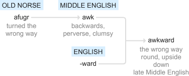

Note pour nouveaux arrivants
⟁URNELCY est un univers cosmogonique expérimental et mythologique.
Il s'agit pour l'auteur d'un édifice important de sa vie et c'est notamment l'œuvre le restituant dans un circuit du sens à une unique manière.
Fenekohq a pondu une philosophie bâtie en réponse à un irrépressible besoin de se trouver soi-même dans cet ouvrage.
La lecture complète du contenu nécessite le langage Français, Anglais et Néologique propre à ⟁URNELCY s'introduisant progressivement au fil du temps.
Vous devriez donc lire au fur et à mesure les écrits de haut en bas à la manière classique pour saisir la progression du contenu.
La composition morphologique globale passe de définitions aux écrits aux schèmes aux bilans puis à une réouverture.
Le mode paysage est conseillé pour les smartphones.
Certaines définitions sont rappelées avec (RAPPEL) ou (RAPPEL +) quand un enrichissement est rajouté dans le sens quand le moment est venu.
Les outils à dispositions sont les suivants:
- Bouquiner des mots de vocabulaire en haut à gauche [🕮]
- Surligner le vocabulaire important en haut à gauche [🕶]
- Activer les définitions dans le texte [🗏]
- Activer le mode clair/sombre en haut à droite [◐]
- Comprendre des objets culturels divers en haut à droite [⟁]
- Pointer vers les timestamp importants avec l'ellipse au milieu en haut pour les principaux chapitres
- Revenir aux titres dont vous vous êtes arrêté juste en bas de cette note
- Trouver des ressemblances et similitudes avec la culture de tout ordre pour une meilleur compréhension dans [Clins d'Œils]
- S'amuser à voir des connexions cachées [Trivia]
Pour les théorèmes en un mot simplifié, ils traitent:
Mapnel - Ontologie
IUVALCY - Cognition
ARc⟁diA - Simulation
Aursyl - Ruine
Lysrua - Richesse
D⦾MIN⦿'s - Révolte Profil d'⟁URNELCY (Self Diagnostic)
Prénom Civil: Anthony
Nom Civil: Fang
Naissance: 19/12/2003
Localisation: France 🇫🇷
Occupations: Gaming, Muse Dash Custom, Danse, Écriture
Chaîne YouTube: Fenekohq
Waifu: Howan (SHOW BY ROCK!!)
Prologue
Dans sa forme la plus simple, ⟁URNELCY peut se diviser en 3 parties "⟁UR ｜ NEL ｜ CY"
⟁UR = ARc⟁diA & Aursyl, NEL = Mapnel, CY = IUVALCY
⟁ est une stylisation de A et tient les mêmes propriétés phonétiques qu'un A.
Voici le taux d'usage des langues de chaque partie, la langue néologique est la dominante pour comprendre ⟁URNELCY.
Langue
Mapnel
IUVALCY
ARc⟁diA
Aursyl
Lysrua
D⦾MIN⦿'s
⟁URNELCY
Français
49%
30%
15%
65%
33%
28%
36,4%
English
1%
50%
60%
25%
7%
2%
24,1%
Néologique
50%
20%
25%
10%
60%
70%
39,1%
⟁URNELCY contient:
[?] œuvres dont [?] principales
[6] Articulations
[2x2] Agendas
[2] Matrices
[...] Définitions
Support pour se familiariser avec le vocabulaire aurnelcyen, une lettre et sa symbolique générale.
Lettrologie
🔠
A
B
C
D
E
F
G
H
I
J
K
L
M
N
O
P
Q
R
S
T
U
V
W
X
Y
Z
📌
Aurore
Ballon
Conscience
Dépassement
Étrange
Fameux
Gouvernail
Harmonie
Immanence
Jeu
Keystone
Langage
Monde
Noyau
Ontologie
Potentiel
Quadrillage
Remarquable
Simulation
Truc
Unique
Vecteur
Wagon
X(ça)
Yggdrasil
Zénith
Les caractères particuliers ne sont pas forcément évidents.
Signologie Spéciale
🔣
⟁
⦾
⦿
🕮
🗏
🕶
◐
◯⬤○● X ●○⬤◯
【X】
『』
「」
Ombre
〖〗
Capsule
𝙼𝚘𝚗𝚘𝚜𝚙𝚊𝚌𝚎
&
%
𝒞𝓊𝓇𝓈𝒾𝓋ℯ
𝔉𝔯𝔞𝔨𝔱𝔲𝔯
⨳
⛤
Barré
IPA
Fantôme
§
666
007
[…]
Flou
Code Binaire
Spoil
⚔️
￣\_(ツ)_/￣
Code Morse
📌
Awkward
Vide
Plein
Nomenclature
Terme
Mode Surligneur
Thème Clair/Sombre
Chapitre X
Auteur X
Œuvre Importante
Œuvre
Aura
Pérégrination
⌂{0 X}⌂
𝙼𝚘𝚗𝚘𝚊-𝙿𝚘𝚕𝚢𝚣
Terla
Derla
ℳℴ𝓃ℴ𝓂🙵𝒫ℴ𝓁𝓎𝓅
𝔐𝔬𝔫𝔬𝔭%𝔓𝔬𝔩𝔶𝔪
Crith
5ync
Trompé
/ˌaɪ piː ˈeɪ/
fantômisé
Bouclure
Pas ce que tu penses
ivel & levi
Baratin
Hey
01001000 01100101 01111001
Cache-Cache
Conflit
Je ne sais pas.
.... . -.--
Introduction
Mapnel(12)
IUVALCY(5)
ARc⟁diA(4)
Aursyl(8)
Lysrua(9)
D⦾MIN⦿'s(?)
◯⬤○● Mapnel ●○⬤◯
Tu n'as rien à faire là, sors d'ici!
Usager des Toilettes… (2000 av. J.-C.)
En serrant des sentiments qui semblent prêts à éclater,
La ville où nous vivons,
sur la colline, s'assombrit encore aujourd'hui.
Ce n'est pas quelque chose d'acquis,
avant qu'on ne s'en rende compte, tout
ne fait que passer en un instant.
C'est pourquoi je chante cette chanson.
Le dégradé d'orange et de bleu
qui semble s'étendre à l'infini.
Je veux graver seulement cet instant magnifique,
si clair que je ne peux même pas cligner des yeux.
Cours, cours, sur le son.
Runners High!!
Je ne peux plus m'arrêter.
Même les nuits où nous avons trébuché, chuté et écorché nos genoux,
nous avons pu les surmonter avec toi.
Cours, cours, plus vite.
Runners High!!
Notre rythme cardiaque est le BPM.
En chantant cet instant précis,
je peux t'emmener n'importe où.
Cours
- Kouta Kaneko -
Il y a 6 niveaux dans la pérégrination d'apprenti-novice à la maîtrise de son être et de son devenir.
Héros/Héroïne:
Figure célèbre et admirable de combat et d'adversité, on en raconte la fulgurance iconique de sa vie.
Pérégrination:
Long voyage sinueux en région reculée des habitudes routinières aisées.
〖Cosmogonie〗
Monoa-Polyz polarise en 2 dynamiques
➡ La florissante Monom&Polyp (cercle vertueux)
➡ La décadente Monop%Polym (cercle vicieux)
【Vydnitt】
ℳℴ𝓃ℴ𝓂🙵𝒫ℴ𝓁𝓎𝓅
𝙼𝚘𝚗𝚘𝚊-𝙿𝚘𝚕𝚢𝚣
𝔐𝔬𝔫𝔬𝔭%𝔓𝔬𝔩𝔶𝔪
ℳℴ𝓃ℴ𝓂
𝙼𝚘𝚗𝚘𝚊
𝔐𝔬𝔫𝔬𝔭
🙵
-
%
𝒫ℴ𝓁𝓎𝓅
𝙿𝚘𝚕𝚢𝚣
𝔓𝔬𝔩𝔶𝔪
Monoa-Polyz:
Être et Devenir Monom&Polyp et Monop%Polym.
Animation originale[-] Au format vedette[Polyz] À toile de fond[Monoa]. Simplifiant - Matière Corde Passage ou Déploiement Énergique
Monom/Mono-Mémoire:
Éternité Homogène Singulière/Sensation vivante d'expérimenter une manifestation perpétuelle.
Une fermeture des coulisses n'achève pas la vie.
Monom implique Polyp (Monom&Polyp) Simplifiant - Être Mouvant
Polyp/Poly-Projection:
Recommencement Hétérogène Pluriel /Sensation vivante d'expérimenter une actualisation cordiale.
L'ouverture des erreurs adapte le rythme d'une vie.
Polyp implique Monom (Monom&Polyp) Simplifiant - Devenir Renouvelé
&(Terla):
Reflet Fortificateur de la boucle entre Monom et Polyp.
Instructrice régulatrice de la sensation vivante expérientielle.
Terla est représenté en anneau pendentif.
Monom&Polyp:
État/Dynamique intemporelle où être et devenir sont entrelacés dans une communion harmonieuse. Simplifiant - Mémoire nourricière permanente & Projection épisodique cyclique ou Laisser Ouvert
Monop/Mono-Prohibition:
Éternité Inhibée Figée/Non-réconciliation rugueuse d'afistoler le menu classique des attributions déterminées.
Dépiction survivante d'un échec ultime et de son insolubilité funeste.
Monop implique Polym (Monop%Polym) Simplifiant - Être Surchargé
Polym/Poly-Malaise:
Recommencement Excité Troublé/Non-réajustement raboteux avec la sécession globale.
Déconstruction survivante de la santé en vue d'opérations autres.
Polym implique Monop (Monop%Polym) Simplifiant - Devenir Perturbé
%(Derla):
Scission Démolisseuse de la sangle entre Monop et Polym.
Obstructrice dispatcheuse atrophiante de la vitalité juvénile.
Derla est représenté en boulet de forçat.
Monop%Polym:
État/Dynamique contractée où être et devenir sont imbriqués dans une déperdition rupturante. Simplifiant - Prohibition affamante saturée % Malaise apathique déclinant ou Prendre au Piège
Monstre 0:
Créature au trajet de l'entre-deux sujette à la corruption et à la finitude condamnée//graciée à la fertilité.
Empreinte animale au milieu de la naissance et du décès plongée à la fois dans une clarté spécifique et un flou intersidéral.
Toute créature concernée par la vie et la mort.
Dévore-Novice:
Adversaire de la seigneurie planifiant son itinéraire purement stratégique dans des proportions d'ennui globalisé.
Ventriloque:
Bagarreur de fortune d'un manque irascible, sous une expression difforme du ventre au détriment de l'organisme intégral.
(RAPPEL+)
Monstre 0:
Créature au trajet de l'entre-deux sujette à la corruption et à la finitude condamnée//graciée à la fertilité.
Empreinte animale au milieu de la naissance et du décès plongée à la fois dans une clarté spécifique et un flou intersidéral.
Toute créature concernée par la vie et la mort.
Chair répondant au Comment au travers d'une instantanéité définie.
Enquête:
Stimulation interrogative explorative autosuffisante dont l'accoutumance ne rend jamais de marbre.
Directions Souveraines:
Aperçu global du sentiment commun, glissant de son évolution sur des générations de l'errance étrangère à la chère réminiscence.
Monstre 0 & Enquête & Directions Souveraines
La route est jonchée d'une large panoplie, hors de question de s'y précipiter sans une bonne étude de la contrée qui m'est accordée.
「Directions Souveraines」
____PAIX____
L'entreprise fut privée
J'y paye l'hôtel
M'arrachant à moi-même
Cette sensation insupportable
De misérable mercenaire
____GUERRE____
Le bunker fut aimanté
J'y perds toute forme de dignité
S'emparant de moi la crise
Cette seringue ignoble
De fortune futile
____NATURE____
La forêt fut harmonieuse
J'y vois la vie faire de son mieux
S'écoulant sans le moindre calcul
Cette conscience ivre
D'alignement spirituel
____SEIGNEURIE____
Le royaume fut juste
J'y offre mes fruits sans distinction
M'impliquant dans l'œuvre cosmique
Ce cœur confiant
D'une immense joie
Illusion:
Filtre stimulant clos intrapersonnel ouvert à ambiguïté interpersonnel.
Ample enchaînement de tensions multi-perspectives.
Atelier Ataraxial:
Accroissement progressif des facultés de tolérance actives vers des vertus passives.
Culture musculaire de paix intérieure.
Fluide Élémentaire:
État second pair évanouissant l'interdit premier impair de la partie analytique vers sa pleine fougue permise ou dommageante.
Mouvement inné s'accomplissant sans intervention clivante.
Illusion & Atelier Ataraxial & Fluide Élémentaire
Il se pourrait que l'on me joue des tours, une galerie espacée repère mieux les intrus; l'inspection paraît quelque peu étrange lorsque ça tremble, me voilà à m'engendrer sans me reconnaître.
「Fluide Élémentaire」
L'énergie s'entretient sans mode d'emploi
La vertu en est symptomatique
Place au courant limpide
Cet inconnu est une vraie blague
À la fois profond par nécessité
Et plein d'immersion
Jouer l'automate n'accomplira point sa nature
Un prisonnier gît dans l'inattention de ses vertus
Le souffle prêté se comble lui-même
Aucun impératif sur cette terre
Point d'élément étranger chez cette roche sans but
Se reconnaître dans la faisance universelle suffit
L'ensemble est plus vrai que le contour
Une fixation isolée sans la moindre relation
Bien entendu, cela m'est inconcevable
Le va-et-vient coule dans la même direction
Il ne s'attrape pas, il se libère sereinement
La mort comme redoutable ne lui sied guère
13/08/24
【Xyfurn 3/3】
Cuisine (Formule/Alignement)
Défi｜Merveille｜Œuvre
Blessure Fossile｜Miroir Clairvoyant｜Gravité Centrale
Blessure Fossile:
Matérialité du tragique balistique, séquelle de fragilisation traumatique.
Détresses périlleuses en représailles.
Miroir Clairvoyant:
Méditation olfactive de sa réalité apparente à un instant donné.
Disposition à l'honnêteté objective et à l'évaluation concise des conséquences a priori.
Gravité Centrale:
Point d'attraction et d'équilibre, pivot des appuis et de la soutenance robuste.
Blessure Fossile & Miroir Clairvoyant & Gravité Centrale
Les cicatrices nécessitent un regard minutieux, s'adapter à ses fragilités en s'aménageant dans la justesse est crucial.
「Gravité Centrale」
Rien n'est garanti, le matin est généreux en lumière,
il le fut pour moi à cet instant immémorial où je ne faisais qu'un avec ma réalité.
Le système linguistique m'a rendu conscient d'un moi anxiogène à l'idée de se confronter au monde.
Sans nul doute,
ce malentendu engendra mes pires cauchemars.
L'esprit tranquille s'imposa sous anesthésie emportant loin de moi l'incompréhensible 〈précieux〉 à l'origine de tout bien.
À mon réveil en pleine rue,
une soupe chaude se présentait en face de moi,
celle-ci portait un message
---- Le chez-soi existe au-delà de la propriété ----
Quiconque soit celui qui me mit sur pied,
tranchant mes chimères insurmontables et basculant ma trajectoire avec si peu,
son geste restera un mémorial au plus profond de moi.
L'éclipse fit place à mon matin,
un second matin bien meilleur que le premier,
celui d'un noble.
Rien n'est dans la poche,
la nuit est aimable en quiétude,
elle le fut pour mon esprit dans cette bulle mystique où je ne faisais qu'un avec l'imagination.
Dépend de moi depuis tout ce temps mes considérations sur ce qui me traverse,
et par dessus tout mes représentations.
13/08/24
ادماعچوق
Admagcoq
Aventure
Magie
Cuisine
Monstre 0
Illusion
Blessure Fossile
Enquête
Atelier Ataraxial
Miroir Clairvoyant
Directions Souveraines
Fluide Élémentaire
Gravité Centrale
Directions Souveraines & Fluide Élémentaire & Gravité Centrale
L'itinéraire est en soi-même, il ne peut en être autrement, c'est donc dans cet espace où réside la grandeur et non dans des admissions collectives.
Sujet
Type: Gnose Taxonomique
Question: Qui Vouloir Être ?
Outil: Admiration de la Grandeur
Éclairage: Motivation Intrinsèque
Alignement: Compétence Bon
Mouvement: Être Mieux que ce qu'on est
Tension: Challenge
Naustre C:
Créature navigatrice consciente et psychiquement relationnelle de son 0 aussi appelée mortel.
Marcheur de son propre sentier s'écartant du coin de l'action définit par la réprimande répressive.
Toute créature concernée par l'engagement.
Chair répondant au Pourquoi au travers d'une maturation indéfinie.
Palpiter de l'Infini:
Battre, disposer l'énergie microcosmique transmutée dans la grandeur macrocosmique.
Acceptation radicale de la totalité, se posant sans surcharge ajoutée les choses appelées à jouer en toute circonstance.
Semaine Sublime:
Élévation continuelle des formes de richesse parmi 7 paliers d'initiations.
Génitale structuration métaphorique du Naustre C.
Hyenuul:
Attache ne pouvant pas se passer de l'envie en vie.
Hâte Hermétique entre guillemets impure.
Naustre C & Infini & Semaine Sublime
Prendre bord représente un délicieux apport alimentaire, l'autorisation simple du déroulement des choses constitue une énorme économie pour s'élever.
Gymnaste: Joueur résolu à gravir, sacrificateur de paix délabrée
Élément: Terre
Anatomie: Bras, Jambes
Forme: Carré □ (Loyauté - Force - Justice)
Défi: Discipline, Solitude
♘ Linkar (Mercredi) ♞
Médecin: Érudit de la santé, thérapeute de la réconciliation
Élément: Eau
Anatomie: Œil
Forme: Triangle △ (Voie - Harmonie - Vérité)
Défi: Confiance, Contradiction
♗ Histel (Jeudi) ♝
Poète: Instructeur éclairé, penseur de préciosité instigatrice
Élément: Air
Anatomie: Poumons
Forme: Hexagone ⬡ (Réseau - Maison - Art)
Défi: Sens de la Vie
Héraut: Aventurier en quête de noblesse, alchimiste forgeron palpitant de l'infini
Élément: Abondance
Anatomie: Arbre de Vie
Forme: Rectangle d'Or ▭ (Perfection)
Défi: Jardin
♕ Nouvarel (Dimanche) ♛
Hyenuul: Conscience exponentielle, pleine vivacité défausseuse de léthargie
Élément: Création
Anatomie: Soi
Forme: Spirale 𖦹 (Sainteté)
Défi: Ø
Sujet
Type: Dialogue Socratique Allégorique
Question: Haine des Systèmes
Outil: Conversation
Éclairage: Comportement Aggravant
Alignement: Mauvais à Bon Foi
Mouvement: Facettes de la Psyché
Tension: Cynisme
Macabrisme:
Odeur épaisse de mort où la fragilité s'expose à coup sûr tôt ou tard.
Véhicule des sentiments souvent extrêmement impactants et brutaux.
Gaunie:
Gaieté unie réveilleuse en plénitude médiale, prolongement des angles latéraux en toute finesse.
Bouquet Gaunique, Instances Gauniques(Reptilien, Sifflet, ARvers-Xoi, Innokcien)
La Gaunie [4-3 Instances] ⟷ L'Agonie [2-1 Instance(s)]
Florescence:
Alliance protéiforme de toutes les instances sous leur rôles adéquat.
Guérison des correspondants bossus désamorçant le célibat cellulaire versatile.
Innokcien:
Dispossédé médiateur reptilien rapetissant les inadvertances par la magnificence de sa trempe.
Instance témoin à la sagacité holistique des ensembles.
Macabrisme & Gaunie & Florescence
Le risque de trépasser se montre plus réel sans allégresse, cet enthousiasme régulier au renouveau émerge d'une confiance indélébile dans la nature spontanée.
「Florescence」
-----Reptilien (Reptile)-----
C'en est trop, s'ils veulent jouer à qui va ira le plus loin
Je me propulserai définitivement, la défaite s'amplifiant face au despote
Le loto a décidé qu'il fallait crier que ce cirque devait brûler.
L'ignorance mondiale injecte l'hallucination
Personne ici-bas ne comprend quoi que ce soit
Nous semblons sommairement irréels dans notre comportement
Juste des rôles bien stériles tournant l'huile sous l'esclavage 2.0
Au fin fond de la société bancale en roquette grillée
L'enseignement obscène est l'infiltration d'un poing serré dans le crâne
Sa communauté en devient une pièce de plomb
Je désavoue et j'enterre vive cette fabrique de plancher
Elle ne se trouve nulle part dans la cohésion du vide interstellaire.
Sifflet (Signal Corporel)-----
Allons manger s'il vous plaît
Ce repas sera particulier
La nourriture physique ne fait pas tout
Néanmoins ce riz me nourrissait à en pleurer
Le privilège veille sur moi.
-----Reptilien (Reptile)-----
Hélas, sa provenance coule d'un opulent gestionnaire de poterie…
-----ARvers-Xoi (MoiーToi)
N'y songe pas de franchir la ligne
Ta solitude te perdra dans les cendres
Reptile, laisse l'innocence te répondre désormais!
-----Innokcien (Innocence)-----
Sache que tu n'as rien à obtenir de moi
Mais par contre si tu me mords de rage…
J'y passerai et tu deviendras une arme de guerre contre toi-même
Tu ne pourras même plus te regarder en face et rire de la vie
Une intraitable soif de revanche s'enragera, vois-tu…
Les corrompus dont tu parles sont les reptiles sans moi.
Cette nourriture dont tu as besoin, la bête ne te l'offrira point.
Qu'est-ce que tu fais lorsque tu n'es pas obligé ?
Quelque chose me démange sans que ce soit de source externe
Lorsqu'on va dans la même direction, je suis soulagée.
En ce moment, tu décides sans moi. Ça m'inquiète.
J'espère qu'on se retrouvera main dans la main au dacodac
Vers une traversée de souvenirs heureux, si nous le voulons bien
Tu me protégeras de ton tranchant et je te ferai sourire de mes larmes.
Sujet
Type: Taxinomie Architecturale
Question: Nation et Politique
Outil: Imagerie Symbolique
Éclairage: Hiérarchies et Charges
Alignement: Civil Neutre
Mouvement: Unisson
Tension: Noyau
EntroPied:
Matérialité du divorce cinétique, tension d'extinction cataclysmique stimulant sa propre réalisation vers une chute prémonitoire.
Désorganisation d'incertitude certaine plus ou moins prédictible.
Filet:
Pertinence exemplaire dont l'admiration foudroie de respect et de tenue civilisatrice.
Dextérité interceptrice des forces de discorde et d'affaiblissement.
Picol-Kentron:
Schéma de multiplicité des rôles, fonctions interprétées par cercles s'empilant par objectifs •RGB•BNG•
Chaque couleur poursuit un rapport étroit avec l'intégralité fonctionnel et fondamentale.
Chromel:
Sublimation décisive des marqueurs traumatiques à la page tournante.
Reprise des déjà vus sur une phase supérieure de configuration.
Meilleur Drapeau, forme authentique et hypothétique.
EntroPied & Filet & Picol-Kentron
L'aimable tient un équipement raffiné afin de subvenir aux soucis parmi ses pairs à travers des conseils avisés, ce règne enfantera une souveraineté libératrice de tous les semblants d'élégance.
Le cadre est un outil pour les débordements, l'intelligence vise les causes de sa présence et il semblerait que le cadre lui-même est cagoulé; nous avons trouvé la structure d'autonomie !?
➡ L'embryon sacrifiant l'impertinence
➡ Le reptilien ne se retournant pas contre lui-même
➡ L'aiguillon réalisant l'harmonie universelle
〖Conflit〗
【Vydnitt】
Sujet
Type: Taxinomie Dialectique
Question: Libre Arbitre
Outil: Contextualisation
Éclairage: Sens de l'Histoire
Alignement: Neutre
Mouvement: Causalité
Tension: Déterminisme et Spontanéité
=Scé;Syn;Cel= Affaires associés à [Monoa].
Plateau de terrain étendue déroulé par [Polyz].
Cellules
=Scé;Syn;Cel= Chaînes associés à [Polyz].
Carreaux de dalles pratiquables portés par [Monoa].
Syndrome
=Scé;Syn;Cel= Intervalle de mesure associé à [Variable -].
Morceau arrangé des chroniques implacables [Monoa-Polyz].
06/06/25
【Fostrah】
Travail:
Collecteur abusant la culture.
(RAPPEL+)
Ventriloque:
Bagarreur de fortune d'un manque irascible, sous une expression difforme de la faim au détriment de l'organisme intégral.
Partisans compétiteurs de l'entendement dévore-novice comme loisir obsessionnel.
Sujet
Type: Satire Sociale Existentialiste
Question: Errance Nihiliste
Outil: Répétition
Éclairage: Pénétration du "mal"
Alignement: Comme Bon me Semble
Mouvement: Gastrique
Tension: Tous contre Tous
「Ventriloque Dépité」
Regardant le monde tourner
La massification de réponses au manque
Le ventre, puis l'ennui
Voilà les affaires à gérer
Vétéran du pattern a de l'appétit
Pour quand délirer en se dévissant
La nuit où tout se mélange
Ça devient si normal
À mon tour de tourner comme le monde
Friand de m'accrocher sur un yoyo
Peluches impuissantes de leurs sorts
Transformées en mécréants
Faire fortune ?
Tous les moyens sont bons
La faim insatiable me définit
Le goût du sang ne me fait ni chaud ni froid
09/02/23
【Uewij】
Veldiac:
Voilier traversant la culture.
INTIMACY:
Proximité sensorielle sous dégradé exponentiel, sous un rayon complémentaire de la libido au plaisir centrifuge.
Supporter collaborateur de l'entendement novice comme amusement dégagé.
Cette volonté substantielle
L'avons-nous jouée en privé ?
Quel genre d'obtention frugale
Compléterait alors les membres ?
La mastication chewing-gumienne
D'héritier en héritier
Le meilleur extracteur,
La meilleure vie ?
Voudrais-je Fonction F Direction punition ?
Restriction des péchés
Alerte ouille; non non
Déchiffrons-moi à partir du soi
Par la simultanéité du trillion de vies
La réponse me paraîtrait évidente
J'ai donc perdu mon baratin.
17/09/24
Sujet
Type: Taxinomie Dramatique
Question: Individu et Gagner
Outil: Outillage
Éclairage: Primitivité
Alignement: Intérêt du Moi
Mouvement: Règne Animal
Tension: Artistes
⌂
{Articulation deHist}
⌂
Je
Tu
Il×Elle
Investisseur
Inconnu
Intouchable
Rôle
Rôdeur
Rôt-Rot
Démon
Décoriste
Déité
〖Quête〗
Équation d'Efficacité Inanitoire:
Calcul scripté pour résulter une détermination à la servitude sous les leviers du contrôle des richesses et la falsification identitaire.
Flingue:
Arme neutralisatrice d'emprise comportementale et psychologique, menace mutilatoire liquidatrice d'intrus en cadavres muets.
Trompette:
Arme jugulatrice d'emprise attentionnelle et épistémologique, menace exilatoire plaqueuse de volontés en valises malléables.
【Fostrah - Uewij】
Sujet
Type: Manifeste de Rupture
Question: Appartenance
Outil: Lunettes×Télescope
Éclairage: Sens du Service
Alignement: Rébellion
Mouvement: Divergence
Tension: Asservissement
「Lunettes vers une cible
×
Télescope vers l'émerveillement」
Implicitement, on engraisse de chimie ventriloquienne l'enfant à la perpétuité.
Ce n'est que par ce moyen que prospère l'obéissance aveugle sous l'otagerie du dévore-novice.
Le fondement de son règne repose sur les leviers de l'asservissement.
Une entreprise si poussiéreuse, collectionnant de la redevabilité sur la base d'une colonisation systémique…
Je peux m'exclamer en moi-même que je sais où je suis sur l'échiquier, l'heure de se faire papillon et lézard.
Cela ne plairait certainement pas au capitole, mais enfin…
L'activation de ma vie bat au centuple.
Me transformant du prisme de la découverte, me camouflant loin des ascenseurs et des corridors…
Je m'élève avec excentricité et discrétion.
Ma place sur la pendule putride de la besogne est cédée.
Je ne serai plus jamais en retard une fois entré au portail.
Avec des bancs et des balançoires au sein de la nature…
La jubilation enchante le rythme de mon âme.
En ce qui concerne le soin du sanctuaire…
Le débat n'a sa place que lorsque les vivres manquent à l'appel.
L'être est sans instrument de mesure, si l'on le veut bien.
Sa prononciation est nécessairement sur mesure selon l'acuité de sa conscience.
Cette armature m'est donc attribuée d'un usage qui sera fait avec joie.
23/09/24
Ventriloque Dépité & Souhait Tacite & Lune×Tele
Initialement finalement, tout et rien constamment décisifs et pourtant mobile anodin presque détachable; arrivera comme il arrive au nom des supervisions qui m'animent.
Sujet
Type: Glossaire Ontologique
Question: Gens et Accomplir
Outil: Ouverture de Soi
Éclairage: Entendement
Alignement: Individuation
Mouvement: Inter-Consciences
Tension: Aursylien
⌂
{Articulation Par-ci=Par-là}
⌂
Jei
Tui
IliーEllie
Jtie
Esprit
Mental
Corps
Monstre
Source
Outil
Habit
Enveloppe
Métaphysique
Substance
Physique
Essence
【Nezrog - Ekeline - Wacwe】
Mélodie Inépelable:
Composition arrangée sans commandement en cohésion organique souple.
A été là depuis le début, a tendu au succès, a déjà réussi, n'a ni atterri ni débarqué.
Parfaitement comme il le fallait, en dehors des espérances, la salle du vivant poursuit son cours.
Le séjour est chargé en poids remarquables, mon prix à moi est semblable aux cultures fertiles, le zèle est en nous.
✿ Héroïne Ekelinienne ✿ Mental Galant ✿
L'allié est toujours caché, le lui-même le fait sursauter, affaire inclassable, quelle est cette énigme ?
On posa cela sur la table comme aux enchères, le rassemblement n'avait aucun sens sans engouement général.
Ces évènements sont assez coquins quand ça ne chuchote plus honnêtement.
⚕ Héros Wacwéen ⚕ Corps Vigoureux ⚕
Cet organisme me répond dans un langage insondable, il tient ça dans la peau.
Le caoutchouc est de nature à la détente, toute résistance est tremblante.
Quant au gardien de l'altérité, il me plaît.
𝄞 Héros Mapnélien 𝄞 Monstre Fantastique 𝄞
Jei ne vais nulle part Tui titilles mon intérêt IliーEllie manœuvre pour Jtie prendre place
Sfivoq:
Dauphin bouillonant d'exaltation, symbolique de l'initiation vitale de déferlantes affirmations cordiales.
Description du Dauphin Sfivoq
(Gymnaste)Dos Élastique(Gymnaste)(Médecin)Larmes de Vitalité(Médecin)(Poète&Flores)4 Évents Lévitation(Poète&Flores)(Hacker)Corne en Fusion(Hacker)(Gaunie)100 Nageoires(Gaunie)(Picol-Kentron)3 Yeux Néons RGB(Picol-Kentron)(Héros)Peau Grise(Héros)
Duel Xceptionnel:
Controverse du statu quo, de son décalcage standardisé et de son arsenal pour le maintenir.
Culmination du déchaînement ravageur pour finalité la délivrance du dévore-novice et de sa machination.
Complétude Nezkelwac et Admagcoq misent en synthèse dans la table des jeux.
Il lève un doigt, mille flingues et mille trompettes s'exécutent à la dysfonction auto-immune.
Moi, autrefois embryon, aurais pu déraper très vite sans filets.
Il dégaîne sa langue, mille fléaux et mille haches déchiquettent et coupent à la porte de l'innocence.
Moi, désormais planteur gaunique, ne serai ni hypnotisé par un reptile du néant ni abattu par ses agents.
Le plan cannibale, nourri d'un collecteur d'entrailles aux tentacules buccales, convertit des vies en muqueuses radioactives.
Si tel est devenu sa nature mentale, alors son démantèlement devient nécessaire pour le plan protecteur.
L'enquête sur les propagateurs est la piste toute tracée pour quiconque curieux de ce qu'il protège.
Aligné avec la vérité Hyenuul, le naustre C demeure dépossédé de toute emprise et illusion; son action coulera du fluide vital et posera sa propre gravité.
Nul microcosme n'est futile, les graines fruitières s'envoleront comme il se doit selon les vents vers d'autres poumons.
La direction civilisationnelle est claire, un noyau peut bien opérer en sirène dans l'ensemble de son périmètre, mais il ne capturera jamais l'officialité du cosmos à sa guise.
L'altération entropique fit du monde et de la vie l'objet d'une étude comptable; il est temps pour moi d'affirmer le fourvoiement des négateurs de l'infini.
Une forêt qui s'incline est le signe d'un suicide bien chargé en papier transactionnel, je suis aussi la cible de ce regard avide, prêt à bondir dans mon dos à la moindre occasion.
Sans le moindre doute que les incurables, lorsqu'ils s'autorisent tous les moyens, macabres de blessures kamikazes, n'échappent pas à un jugement simple de clôture.
Pour se munir de la possible sanglante nécessité, regardons-la sous une loupe transparente où l'ataraxie prend place, le devoir de régénérer les racines innokciennes sans la moindre malveillance.
Mon serpent est la rigueur du tribunal et ma colombe est le ravissement de la culture en dédicace à Chromel.
Pour autant, il n'y a souvent aucun moyen de pacifier un mutilé loyal à un environnement stérile.
Les ressources au retour à la vertu ne sont pas à l'habitude de la frénésie bipolaire demandée par le géomètre et le chimiste.
S'ils avaient su ce qui se joue, entre une équation fragmentaire et un comble existentiel, jtie s'employer à une entente au mépris commun des pronoms mal-intentionnés.
Se reconnaître dans le miroir s'avère un vrai mystère, le mouvement du monstre en moi tend à la préservation de cette terre si mémorable dont mon cœur en palpite.
Quel genre de semaine m'attend ici-bas en fleurissant du mieux que je peux ?
04/09/24
MonPol:
Titre honorifique envers l'être et son devenir ou le mémojectile quoi qu'il en soit.
Un problème, une substance impénétrable, puis le point de tension, est-ce vraiment un problème en face de moi ?
Il semblerait que les coups de fouet agités identifient vers ses propres fins ce qu'il tient en face de lui.
Le swag s'empare de moi et ce sera au tour de mon cher voisin.
◯⬤○● IUVALCY ●○⬤◯
Mon maître m'appelle, il me connaît si bien que ça?
Gymnaste… (⯑⯑⯑⯑/⯑⯑⯑⯑)
A point where 0 and 1 intersects
A communication full of mistakes
What is your name?
Answer me within a 10 word limit
A point where the past and future intersects
Losing my destination in my present location
Why are you living?
Answer within a 100 word limit
The day breaks at a maximum speed never seen before
Unable to keep my balance
I am somehow left behind
A soundless world, an artificial world
If you’re just going to throw away that rotten fruit
You don’t need two people, one’s just enough.
A point where afternoon and night intersects
Yearning to meet someone but unable to
What is my name?
Tell me within a 10 word limit
A point where lies and truths intersects
This feeling of entrapment that hinders my breathing
Why am I living?
Tell me within a 100 word limit
"I like you. I hate you. I like you. I hate you" was repeated over and over
This tiresome love…I don’t want it
Time is the only thing that keeps on passing by
Crumbling this world in a matter of seconds
Coating over this twisted scenery
I don’t want the truth, a lie is just fine
I was somehow left behind
A colourless world, a world I’ve dreamed about
Even throwing away this rotten fruit
I can’t do it alone, I want you by my side so much
- 40mP -
【UiNo 1/2】
Crithekiel:
Metteur en scène du manège de l'échec dialectique de la dialectique,
depuis les classifications à la fois limitantes et fragmentaires,
la création s'embouche un coin.
Sans la moindre intervention,
souffle l'effondrement d'une complétude incomplète. Simplifiant - Dénomination artificielle
Critheqiel:
Redéveloppement référenciel jusqu'à son terme en irrémédiable piège.
Impasse cognitive et obsolescence,
liées aux systèmes de classification,
aux formats fixes,
aux dépendances conceptuelles,
la capture se dissout spontanément part en part. Simplifiant - Disposition d'hyper-perspective
Critheçiel:
Formule de l'impérissable des puissances potentielles invisibles.
Tant les familles ou champs lexicaux,
ces domaines portent un doute quant à leur invention,
ça ne peut que faire sens sans faire sens mais c'est comme ça. Simplifiant - Douance prospectoire
[K] Appellation Statique
[Q] Évocation Dynamique
[Ç] Fabulation Médiane
[Critère:Théologie]
[Critique:Théorie]
[Que Dieu le fortifie]
1. Table Critère:Théologie (Volonté & Représentation)
---Qu'est-ce qui est Important ? (Expérience)
2. Index Critique:Théorie (Bifurcation & Vraisemblance)
---Est-ce Possible ? Y aurait-il Mieux ? (Expérimental)
3. Dieu le FORTifie (Intemporalité)
---Pertinence Impérieuse (Expertise)
[K] Merci d'avoir pensé à moi
Quel doux réconfort
Cette peluche est sage
Les fabricants le sont aussi ?
[Ç] La bête multiplie les peluches
Offrant un bon sommeil
L'échange de fruits la nourrit
Elle fera de meilleures peluches
[K] La bête a du cœur papa ?
Elle aime aussi les peluches ?
[Ç] Ma fille, la bête est très affamée
Elle a renoncé à son cœur
Elle souhaite un monde de peluches
Elle ne se repose donc pas sur ses lauriers
[Q] Cheffe d'orchestre…
Militaires au premier rang…
Clients au second…
Militants au rang des pendus.
Si je paye cette peluche mon ange,
Tu votes pour l'entreprise de la bête.
[Q] Papa, il faut l'arrêter!
Si cela est vrai
Je leur ferai s'évader
Pour qu'elles connaissent
La reconnaissance et le cœur
Je volerais tout le magasin!
Laissant y à la porte du voisinage
[KÇQ] Princesse coquine, bien dit
Ce contrat commercial point dans notre élément
La chaleur viendra du fond du cœur ;)
05/03/24
Critherçation:
Depuis le rationnel et l'irrationnel,
kinésie gymnastique à partir d'incantations,
celles dissécatoires de la dissection indissectionnable.
Le langage sied cette pipelette à merveille, une vrai tête à claque amuseuse de galerie. Simplifiant - Discours sans dessus dessous
Verbe - Critherçer
Temps
Je
Tu
Il/Elle
Nous
Vous
Ils/Elles
Présent
Critherçe
Critherçes
Critherçe
Critherçons
Critherçez
Critherçent
Imparfait
Critherçais
Critherçais
Critherçait
Critherçions
Critherçiez
Critherçaient
Passé Simple
Critherçai
Critherças
Critherça
Critherçâmes
Critherçâtes
Critherçèrent
Futur
Critherçerai
Critherçeras
Critherçera
Critherçerons
Critherçerez
Critherçeront
Conditionnel
Critherçerais
Critherçerais
Critherçerait
Critherçerions
Critherçeriez
Critherçeraient
Subjonctif Présent
Critherçe
Critherçes
Critherçe
Critherçions
Critherçiez
Critherçent
Subjonctif Imparfait
Critherçasse
Critherçasses
Critherçât
Critherçassions
Critherçassiez
Critherçassent
PAMABWAAA:
Down-Load[ing/able]-Content or acronym DLC.
[…] New Data put on the disc. . . Loading ⟳. . .
Launching as administrator "Funny_Pleasure.sin"
'pocuP&moceM' or . . . 'PApa & maMA' = 'PAMABWAAA'
[19.64.71] Nourishment Engine Confirmation.
[76.91.13] New eventual enjoyable Deity up to people's hands.
[24.83.56] So called the Care not as a word nor a belief.
[04.05.25] May I be of assistance, dear lady PrisM ?
- C'est pas ma boîte. oulala…
Ma BWAAAte!! Je l'ai trouvée!
Qu'est-ce qu'elle fait ici ?
【fOSTRAh - uEWIj】
Sujet
Type: Manifeste Apocalyptique
Question: Cruauté
Outil: Armement
Éclairage: Autoritarisme
Alignement: Obéissance au Stupide
Mouvement: Meurtre
Tension: Tyrannies et Traîtres
「tIRe-tROUBLe」
dÉFAITe DeS fAIBLEs
tENTACULEs gROSSEs tÊTEs
à sTRATÉGIEs fROIDEs
pURÉe pOUr cALMEr
tRIBUNAl pOUr fOUDROYEr
cOMBIEn à dÉZINGUEr
lAVAGe pLAINe mORTe
mALFONCTIOn hÉMISPHÈRe
AvC cASSe-pIEd
09/04/24
(RAPPEL +)
INTIMACY:
Trinité Viscérale [⦻] {0} (∞) ou <Ж>; Proximité sensorielle sous dégradé exponentiel, sous un rayon complémentaire de la libido au plaisir centrifuge.
Supporter collaborateur de l'entendement novice comme amusement dégagé.
XaraЖereX:
@ttributs tout aussi bien absolus et relatifs comprisent dans une pile de données interminable.
Danse confuse ambivalente en cadre et légitimité.
Concubinage Iuvalcien
Crithekiel
Droit
Rectiligne
A-xial
▣Carrés▣
·Simple·
🗹OUI🗹
📈Win📈
✊Pierre✊
🅄IUN🅄
⌘Intérêt⌘
⦻Croix⦻
Xara Ж ereX
Critheçiel
Vecteur
Mouvement
B-ridge
▢Squircle▢
‥Mixture‥
☐POSSIBLE☐
📊Draw📊
✋Feuille✋
⩉UNI⩉
⌨Remarque⌨
0Zéro0
Critheqiel
Courbe
Angulaire
C-irculaire
⦿Cercles⦿
…Complexe…
☒NON☒
📉Loss📉
✌Ciseaux✌
ⒾNIUⒾ
°Degré°
∞Infini∞
[Français plus optimisé ici - French more optimized here]
(RAPPEL +)
Travail:
Collecteur $¥€₿ [Monop%Polym] abusant la culture (Profit - Extraction - Monopole - Accumulation).
Ce qui doit être fait pour l'âme collective à ce qu'on dit.
Tic au devoir avec ravoir.
(RAPPEL +)
Veldiac:
Voilier 1234 traversant la culture (1 - 2 - 3 - 4).
Ce qui ne bouge pas et fait que le village voile à ce qu'on dit.
Silence au devoir sans savoir.
Veldiac AL:
Voilier 0@O⏲ [Critheçiel] épanouissant la culture (Éther - Association - Manifestation - Horloge).
Veldiac AJtieL:
Voilier [Monom&Polyp]~=~[Critheçiel] réalisant la culture.
Verbe - Veldre
Temps
Je
Tu
Il/Elle
Nous
Vous
Ils/Elles
Présent
Velds
Velds
Veld
Veldons
Veldez
Veldent
Imparfait
Veldais
Veldais
Veldait
Veldions
Veldiez
Veldaient
Passé Simple
Velds
Velds
Veld
Veldîmes
Veldîtes
Veldirent
Futur
Veldrai
Veldras
Veldra
Veldrons
Veldrez
Veldront
Conditionnel
Veldrais
Veldrais
Veldrait
Veldrions
Veldriez
Veldraient
Subjonctif Présent
Velde
Veldes
Velde
Veldions
Veldiez
Veldent
Subjonctif Imparfait
Veldasse
Veldasses
Veldât
Veldassions
Veldassiez
Veldassent
Sujet
Type: Traité de Logique Morale
Question: Sens du Bon
Outil: Travail et Veldiac
Éclairage: Définitions Raisonnées
Alignement: Bien Rationnel
Mouvement: Bien-Être
Tension: Travail sans Veldiac
「BonBon=Bons」
Il n'existe pas de bon travail sans un bon veldiac.
Il n'existe pas de bon veldiac sans un bon délice.
Le bon est subjectif et se ressent d'après un sujet.
Le bon est objectif et s'observe depuis des goûts.
Le bon est encore plus bon selon son niveau de rareté.
Le bon ne comble que pour un moment intermédiaire.
Le comble et le bon ne s'impliquent pas nécessairement.
Le bon devient mal quand il est gâté en non-manque.
Le manque participe au bon sur une certaine mesure.
Le manque s'accompagne d'un comble en réponse.
Un manque persistant entraîne un sommeil négatif.
Le négatif se balance avec le positif.
Le positif et négatif ne sont ni bons ni mauvais.
La perception du bon et du mauvais s'imprègne.
Le jugement hâtif ne cerne qu'un morceau du tout.
29/10/25
(RAPPEL)
Gaunie:
Gaieté unie réveilleuse en plénitude médiale, prolongement des angles latéraux en toute finesse.
Bouquet Gaunique, Instances Gauniques(Reptilien, Sifflet, ARvers-Xoi, Innokcien)
La Gaunie [4-3 Instances] ⟷ L'Agonie [2-1 Instance(s)]
Ganie:
Hors-ganisme alias aux couches plus lointaines que l'organologie actuelle.
GaunieGanie:
Gaieté Hors-ganique.
Gaunie+Ganie pouvant se dire à l'avers ou à revers.
Extase, Félicité, Transe
Crith:
Commandement à l'antenne de singularité complète-incomplète.
⨳⨳⨳CRiTH&?i&L⨳⨳⨳
Forcé de constater le mal de tête à essayer d'essayer une tentative de chicotement.
Un désarroi peu désirable n'accède qu'aux antagonismes viscéraux; la poisse…
Ainsi donc, la stylistique morphique est mienne ?
Symboles Nezroguides
Nezrog représente la fouille intérieure;
Sur un encadrement intégral sans limites,
Il prononce la subtilité constitutive de la totalité.
Symboles Ekelinides
Ekeline représente le point de ralliement;
Autour d'une filature bouclée croissante,
Elle lie les deux pièces de manière simultanée.
Symboles Wacwéides
Wacwe représente la richesse entretenue;
Dans un agir hors des monologues et allocutions,
Il s'applique sans grand impératif sociétal.
Symboles Leqwéides
Leqwa représente la faim manifestée;
Grâce à sa redoutable puissance dont on lui a prêté,
Il enchante la source en transperçant les éventuelles murailles dites insurmontables.
Symboles Crithekides
Crithekiel représente la discompréhension des notions tranchées;
En tant que renversement maïeutico-idéologique,
A pour effet l'annulation même de la croyance à un absolu et en sa nécessité psychologique.
1. Monoa-Polyz
(Unité Monom & Jonction & & Fraction Polyp & Monom&Polyp & Critheçiel)
Codename-Codedate,
des notions vite oubliées quand les meilleurs moments nous enchantent de fluidité hypnotique farfelue.
2. Incarnation
(Hibou & Papillon & Lézard & Sfivoq & Critheqiel)
Les espèces ne se sectionnent qu'en bases incomplètes,
un type raté ne se guête sous aucune traduction précise.
3. Altermonde
(Portail & Balançoire & Banc & Toboggan & (Im)Prévu)
Pulsation, Pulsation…
avance vers le monde pour l'accomplir d'abord-enfin-d'enfin-abord.
4. Héros
(Esprit Joueur & Mental Galant & Corps Vigoureux & Monstre Fantastique & Hypothèse
Certitude)
Ce fait que ce qui fait que tout s'échappe comme une substance précieuse.
5. Hist
(Investisseur Méta-Formel & Inconnue Méta-Originale & Intouchable Méta-Moral &
Inépluchable
Méta-Force & Inaccessible Méta-Catégorie)
Une déclaration peu familière se répand au sein du globe,
il est certainement l'heure de briser la glace.
6. Socle
(Fruit & Fécondation & Fourniture & Flottaison & Symptôme)
La répétition de la dédicace maintient la société dans la bonne ambiance,
un entraînement viable nous rend capable de nouveaux paliers au fur et à mesure de la progression.
7. Divinité
(Mystérieux & Pure & Credo & Accomplissement & Kriterium)
Parvenir aux propriétés lisses et pointues sous la dose concordante,
les motifs caractéristiques distincts pour une démarche perspicace.
8. Parcours
(Excursion & Randonnée & Marathon & Succession & N'Importe Où Nulle Part)
Un moment de découverte,
la seconde visite libre,
ensuite le lieu du défi;
la prochaine lignée aura son moment.
9. Orbe
(Résonance & Bulle & Posture & Aura & (Im/Ex)plication)
L'état intime est modulable à partir d'une observation assidue de ses sensations internes.
10. Naustral
(Boussole & Aiguille & Stèle & Manette & (In/Ex)tention)
L'aimant C est indéchiffrable,
en plus d'apporter un rendu toujours ambigu,
sa subjectivité manque les autres subjectivités.
11. Discipline
(Tir à l'Arc & Slackline & Parachutisme & Surf & Conscience)
Équilibre, précision et stabilité sont nécessaires dans tous les domaines pour tenir debout.
12. Installation
(Examen & Illustration & Sillon & Canal & (In)Défini)
Les mises à jour automatiques proviennent d'anciens modèles assurément traumatiques.
Y aurait-il des portes encore imperceptibles qui me sortiraient des espaces comprimés ?
13. Spirale
(Souffle & Élan & Diffusion & Vortex & (Ir)Rationnel)
Un tourbillon de vie se jauge dans tous les angles à la fois,
la colle est incapable de coller la colle.
14. Panorama
(Lointain & Nœud & Axe & Bain & À Quel Point ?)
À cette échelle,
Micro & Macro ne doivent rien à proprement dit.
Il faut nécessairement être une entité étrangère pour devoir quelconque chose.
15. Temporalité
(Passé & Présent & Futur & Piste & Au-Delà)
L'allure de la pièce semble si téléportatrice,
manquer continuellement à l'appel creuserait un gâchis susceptible au décuplement.
16. Dimension
(Ordre & Harmonie & Chaos & Bouleversement & Vertu)
Célébrer chaque champ de force requiert une égalité diverse, l'engendreur engendre l'engendré.
17. Interaction
(Sujet & Relation & Objet & Maître & Seigneur)
Puisque la confiance est fondamentale,
pourquoi pas imposer rien de plus que le sens irrépréssible qui échappe à tous ?
18. Intelligence
(Intellect & Émotion & Social & Adversité & Spirituel)
De l'exquis détectiviste au nom de pas grand chose,
ça fonds dans soi-même.
19. Évolution
(Gènes & Mèmes & Témènes & Némènes & Technèmes)
Passer son ADN,
le but des vivants selon la version officielle, ça veut être plus grand que ce que c'est.
20. Calculatrice
(Addition & Soustraction & Multiplication & Division & Opération)
Refaites l'équation,
je ne vous sens pas prêt à prendre en main vos ressources.
MATRICE 5ync sur 5ync
Symbolisme Pentagrammique 5x20 Mapnélo-Iuvalcien.
⌂
{MATRICE 5ync sur 5ync}
⌂
Spécimen
Nezrog
Ekeline
Wacwe
Leqwa
Crithekiel
Monoa-Polyz
Unité Monom
Jonction &
Fraction Polyp
Monom&Polyp
Critheçiel
Incarnation
Hibou
Papillon
Lézard
Sfivoq
Critheqiel
Altermonde
Portail
Balançoire
Banc
Toboggan
(Im)Prévu
Héros
Esprit Joueur
Mental Galant
Corps Vigoureux
Monstre Fantastique
Hypothèse Certitude
deHist
Investisseur Méta-Formel
Inconnue Méta-Originale
Intouchable Méta-Moral
Inépluchable Méta-Force
Inaccessible Méta-Catégorie
Socle
Fruit
Fécondation
Fourniture
Flottaison
Symptôme
Divinité
Mystérieux
Pure
Credo
Accomplissement
Kriterium
Parcours
Excursion
Randonnée
Marathon
Succession
Ubiquité
Orbe
Résonance
Bulle
Posture
Aura
(Im/Ex)plication
Naustral
Boussole
Aiguille
Stèle
Manette
(In/Ex)tention
Discipline
Tir à l'Arc
Slackline
Parachutisme
Surf
Conscience
Installation
Examen
Illustration
Sillon
Canal
(In)Défini
Spirale
Souffle
Élan
Diffusion
Vortex
(Ir)Rationnel
Panorama
Lointain
Nœud
Axe
Bain
À Quel Point ?
Temporalité
Passé
Présent
Futur
Piste
Au-Delà
Dimension
Ordre
Lacet
Chaos
Bouleversement
Vertu
Interaction
Sujet
Relation
Objet
Maître
Seigneur
Intelligence
Intellect
Émotion
Social
Adversité
Spirituel
Évolution
Gènes
Mèmes
Témènes
Némènes
Technèmes
Calculatrice
Addition
Soustraction
Multiplication
Division
Opération
⟁
◯⬤○● ARc⟁diA ●○⬤◯
Is man a person or a pawn? Is he a cog in the wheel of the state or a free creative being capable of accepting responsibility?
Martin Luther King Jr. (1929-1968)
どうしても抜け出せない 鎖の《宿命》
アダムとマダムの星の匂い
かき消すように咆哮べ ふたり共に Feel the Free...
Ah Ahn Ah Ah Ahn
- Gohgo -
Adam and Madame
One Two Three Four… Skip,
Count… Twenty Four.
This unending world, Break the Fate!
Ah Ahn Ah Ah Ahn
Like a burning love, yearning for the red earth and the flame of life
Even if I take you away, losing even the stars This tainted world and the sin we committed
Who will return time to the way it was when the leaves were born pure?
Why sulk around? That’s no good!
Don’t let yourself sway and cry Night and Day
Wield My Light—don’t let it end! It’s fine
Belive my way, my way—I’ll pray for it
Trees, lilies, the sun, the earth, the primordial sea - The Name of Sin -
Oh sky that looks downcast This dark, flightless world, it’s not over yet Isn’t that right? Even if it’s painful
Rise up, the end is near
I swear, I won’t let anyone take you away
I’m sorry I made you cry # Don’t make me cry~ #<
Dreaming of shaping or destroying the future
The “love” (nectar) of the deep heart at the end of ideals
It was sweet, bitter, and made me cry a little # Tears of the Ganges #
I just can’t escape, bound by the “trap” of fate
The scent of the stars of Adam and Madame
Our love is Feel the Free…
Ah Ahn Ah Ah Ahn
Born bare, standing naked
Just standing there with leaves pasted on won’t change anything So, shall we take a step forward? Shall we take what we can?
A little taboo breaking—humans do that, right?
Oh, what did you do with the fruit of ego? Did you hide it? At least don’t lie to me, not me—Do not Cheat on me!
Desire? Hope? A lie—spill it all
Let me go!
She messed up & burned out!
In the end, she was angry
What’s left of human greed in its decay?
I’m sorry, goodbye, Adam # Don’t let me go~ #
The end of mankind—
A tragedy or comedy, something outside of anyone’s “script”
The answer is one we’ll create # Together in the Ganges #
Breaking the fate we were born into, wishing for “freedom,”
With machines, amber, and human hope
Battling in the heavens, Feel the Free…
We don’t know—
The memories of this world
Or the repeated destruction
But, surely—
You were born to find happiness Why say everything is pointless?
Don’t say that
Goodbye, sorry—no, that’s not right
I swear, I won’t let anyone take you away Wait…please, wait…!! Why? Why? Why? Why!!
Dreaming of shaping or destroying the future
The “love” (nectar) of the deep heart at the end of ideals
It was sweet to the point of madness, and it made me cry # Tears of the Ganges #
I just can’t escape, bound by the “trap” of fate
The scent of the stars of Adam and Madame
Roar to drown it all out Together, we Feel the Free…
Ah Ahn Ah Ah Ahn
- Gohgo -
⟁ = Awkward

Sujet
Type: Méditation Aphoristique
Question: Jeu
Outil: Essentialisation
Éclairage: Origine
Alignement: Neutre
Mouvement: Nudité
Tension: Erreurs
「Start」
Let be made the game
It didn't try to be made
Now man is trying to be what he isn't A tool riddled with debt
Such an illusive idea isn't fit for life
Intentionally self-condemns
The tricked mind fights against a ghost
His eyes, comfortable at seeing resources,
Ultimately self-suicides in the mirror
Blindness has a price
Judges won't bring justice
Do not come from an external power Expect good trees in a bad forest
The body don't try anything
It just do the doing as it should be
Made as it should be We teach how to seek
Virtues are all in you
Without any temptation
You just haven't realized it yet
Letricot:
Tricotage des lettres, contradiction irrésolvable.
================== TRICK_&_TREAT:
Essayer de raisonner ou Conduire sa raison, telle est la question.
================== /ERRØRED-1%
Subscription to Conditional Life Existence License Agreement Terms of Use
The President/tnediserP guarantee fundamentals inherents rights given to the people for the sake of sanity
In exchange of that majestic dwelling, value is all in the duty of it's contributors
Sharing Services-Goods-Exchanges for the common benefits of the whole society
All mens are created equally, from the generosity of the Republic of Urflosia!
Can't be bypassed as you sign in by your own will
The contract say everything in all possible setups
If you're in the wrong or the right direction You can tell by looking your situation ?
Anyway, you caused your own collapse ? Fleeing your responsibilities as an Urflosian!?
Sorry you're no longer an Urflosian…
You never was to be honest.
I misjudged you.
That absurd joke cooked the World.
The plan still continue without you nevertheless with you.
Virtual Realities impacting users to it's purpose.
Speaking of a miracle lecture, not VR market in any case.
Affirm or Negate, that's the definition of a "proposition"
Business cary the juice of well being after all.
The leaderboards fluent speakers Primal Reality
Written through every single paid staff
Or condemned like this document.
Imagine the GENIUS/SUINEG CORP owning 99% of the universe and a whosoever person state
I decided to make a child on this world.
Then if it's true that it effectively decided all by himself
As a responsable citizen so to speak
Wonder if it's even worthy on such a world
Where is the court to judge it ?
The lawyer said honestly a thinggy which isn't on the script of how things shall be done:
We were wrong about it's name!
It's all cooked up dissonance associations!
All manufactured dressing ID card product!
The alphabet isn't sufficient to get anything-anyone right!
The prophetic ruler is cursing every single links one by one.
The last thing to keep us agonizing is to hide it, fake it, to cover it all…
The author is by a Selectful Buying Machine, don't believe me.
It's written on history.
Trick-or-Treat!
TRICK_&_TREAT
Try to trick me
As a reason to treat me
Like shit
Dry to trick you
As meaningful to treat it
The way it may eventually be
Something like a half determination…
Worded into an excuse letter… What a crime…
The minus temple… 1% is owned too…
If we are really getting to this game…
Well, the Sfivoq guessed then at the same time…
Nor legally… Nor illegally…
~Monom&moceM~🙵~Polyp&pocuP~:
C'est probablement une blague (つ≧▽≦)つ ʱªʱªʱª(ᕑᗢूᓫ∗)
( M a g i c • C i r c l e )
~ Monom&moceM ~ 🙵 ~ Polyp&pocuP ~
&🙵&
fântomiseur/phantomizer:
Il m'en bouche un coin, je voudrai effectivement une diarrhée pérenne.
Je t'ai démasqué petit cachotier, voilà un fantôme, ça existe pour de vrai ouuahhh!!
Mirsa Mirsa Mua:
Thémathique du vouloir double, Forme Hypothéthique ouverte 'Tu saura prochainement si tu es intéressé'.
Sujet
Type: Dialogue Ironique d'Émancipation Identitaire
Question: Qui et Inventions
Outil: Inconscient et Créativité
Éclairage: Fantômisé
Alignement: Systémique et Contestant
Mouvement: aLIaKKaHH eRUeGGeHH
Tension: Légitimité
「FekiTruTHako」
= Unclassified CASE 1 =
Average TukTak media out of context
I tried to assassinate someone
By introducing a pathogen inside an opening door slot
Maybe I did that for justice ? Who knows ?
Seems as though the pathogen carved its own path
Pierced breakthrough the box and is approaching me
The flowing counter ticks, my death was imminent.
I felt it would happen
I felt it high
Pain can't be escaped
But if I would sell it
It has to be a good showcase
That was ATROCIOUS ahhh!
Take me seriously!!
I swear it!!!
Just teasing, know what ?
I didn't think anything despite all
I could handle it pretty smoothly
Something bizarre is off
Some strangeness as usual
That wasn't me lol
That dream happens the way it happened
Based on a ridiculous amount of things
I had enough amount of lucidity to get it
Acquired nothing more than a lustful release
Where I was the apart incarnation of… Ha surfing towards Crith
Or Crith surfing backwards Ha
The one who doesn't know it's beginning
Yet can eventually navigate it's end
It all happened effortlessly
Like well-made rolling on wheels
Now I'm awake and think I know who I'am
Quantifiable Experience Doubtful
Now this dream is put into virtualization through gaming
05/05/25
= Classified CASE 2 =
This is a Malicious Malware!!!
I hope children act like that…
Gamers play gaming playful games, never-ending shit
Shitting on borders to shit borderless right there
We did it, yaahou, you were fooled
What a jolly kidding kit( ͡° ͜ʖ ͡°)
Well, that's Martin's gag
But wait…
Who knows who Martin is ?
Is he also Nameness or Nessname or Sseleman ?
However, his name on the internet is Natjuhqee [♂]
That's possible cuz anything distinctive is right
No account picked that name before on the servers
What a person I know!
Well, if he knows… =OKAY=
However Rhynsaav [♀] is preparing some food here
Why not check ?
┌( ಠ‿ಠ )┘
- Phonetics(IPA) -
/ˈmɪərsə ˈmɪərsə ˈmuːə/
- Latin Bridge Transcription -
Meer-suh, Meer-suh, Moo-ah
Oh, what!
Thee said Mirsa Mirsa Mua.
I can't say it very well…
Never heard such an incantation!
Are you inventing a new thinggy ?
Natjuhqee doesn't know.
(⊙_☉)
With some details missed as an adaptation
Rhynsaav statement couldn't be reached that easily
Simplified first
-Incomplete Translation-
Ha ha ha… You will soon know, if you are interested…
So, can you translate it ?
Because you are in my territory here…
(ㆆ ᴗ ㆆ)
Oh, that sounds captivating!
Natjuhqee is excited.
(≧▽≦)
It's me and you, a curious and a rhynsaavian
That may not be called rhynsaavian
Surely if a wonderful partner sign on
⊂◉‿◉つ
We can make lyrics together
Big stories experienced on others methods
More real on their own model of conception
With that immersive feeling, making an identity
Layers out of layers, bit by bit.
ദ്ദി(˵ •̀ ᴗ - ˵ ) ✧
Natjuhqee could be Guslacreh the Hungry
Rhynsaav could be Sizrewil the Cooker
( ˘▽˘)っ♨┬─┬(◕‿◕♡)
On social-duet recognition
The legend says Guslacreh traveled for food
On a quest hoping for new horizons
Sizrewil was cooking since then
She wants him to join the party(>▽<)
It got a lot of stylish uniqueness, unknown culture
Bruh, let's enjoy shit where we're supposed to shit
By free speech ?~~?~~~?~~~~?~~~~~!
That won't hijack the hidden possibilities
Undiscovered dictionaries of inventions
Besides both of them, no one will get it.
( ๑‾̀◡‾́)(‾̀◡‾́ ๑)
You are not approved(ꆤ⍸ꆤ)
X migrant stranger cheating on rules
and gay AtrociuX
[ACCESS DENIED]
Argued by all saints
Which was proven
Cause they were saints.
৻( •̀ ᗜ •́ ৻)
Rhynsaav was by the way,
Raised up so to speak
To the stadium of privacy
Seriously, serious as usual
An orphan who left abusive parents
I come from I know…
The adults took their seat
Spelling everything correctly
They said "SAINT" no, not "saint"
I don't mean that ya oh, oh, oh…
( 〃● ₃● ) ~
We do not grant you
Those savage meanings/names
In our sublime palace.
Official OFFICIAL here! CREATIVITY is OURS.
We are qualified so.
Writing to perfection is a training to suffer.
Our Magnificent SHIT which was the chosen one…
Better than any other shit in the universe.
So DO IT! We won't say it a second time.
( ͝° ͜ʖ͡°)=o==[]::::::::::>
Meanings belong to everyone, not only yours!
So a war began, until extinction of one side…
(╯ಠ∩ರ)╯︵ ┻━┻
Turned Custom 1.0 to -1.0
Like a superstition to fear…
What these masked maskers Disguised in them
Kingdom →modgniK
The real looks: the Devil, barely sayable.
Associated with order → so security → so good…
nope
The version altered of all shit, to shit on you…
You couldn't shit on them, since they made the models where they were saints.
Saints are selfish, fishing crowds/masses
====================
<Chewing-Gum> was <hungry> <Consciousness> was <a very creative game conceptor>
====================
====================
<Conspiration> was <a vicious weapon traitor against us>
<Bruxist-Gun> was <mentally illed>
====================
Saints ate their culture and sealed it.
Therefore, they weren't Saints at all.
Negators of life. Who knows knows so…
Yeah it's confirmed reading it so hhmmm…
\(๑•́o•̀๑)/
16/04/25
Sujet
Type: Tableau d'Archétypes de la Cohésion Culturelle
Question: Genre
Outil: Sens Commun
Éclairage: Symbolisme
Alignement: Social Ordonné
Mouvement: Civil
Tension: Compatibilité
⌂
{Articulation Link/Age}
⌂
Hom
Fem
Enf
Arte
Oh
Logique
Connection
Engagement
Inspiration
Hummm
Raisonner
Ressentir
Chercher
Imaginer
Tadam
Frontière
Contagion
Intensité
Vision
Miam
System,
Purpose,
and the Awkward
Realm
of Kindred
SP⟁RK
Tra§Vel:
Bouclure de flambeau Doppelgänger des entrailles exclusives inclusives selon la forme et les convulsions du vouloir. (Travail § Veldiac)
Dose d'altérité réaliste et utopique sous les moyens du bord et du fond.
Abraham Maslow Traveling
Travail
Eau
Nourriture
Santé
Réussite
Moralité
Estime de Soi
Acceptation des Faits
Résolution des Problèmes
Veldiac
Respiration
Sommeil
Famille
Propriété
Amitié
Intimité
Spontanéité
Absence de Préjugés
Tra§Vel
Sexe
Excrétion
Homéostase
Sécurité
Ressources
Confiance
Créativité
Respect
Câble/Wire:
Le destin t'a choisi, ta vie a un sens, tu as besoin de ceci ou cela XD.
Scepticisme de l'artificialité.
InfiNieR:
Antinomie tragico-splendide profanateur de panoptisme.
Infirme, Infirmier, Infirmerie, Infini
Blehdwoluzvi:
Le pouvoir dévoriste n'est que blehdwo, tu connais maintenant, tu es prêt pour la vie!
Librairie Ludothèque Hourra! Comédie ou Tragédie ?
Gorgeous Raper:
Magnifique Violeur.
Tu peux t'en aller si tu veux.
Un combat qui ne peut être pas
【TôH
L@C
JēM】
This text can hurt and is to read with meticulous precautions and perspectives
Sujet
Type: Testament Théologique Méta-Analytique
Question: Psychopathie
Outil: Quotient Intellectuel
Éclairage: Câble et Colonisation
Alignement: Position Biaisé
Mouvement: JooQooBoo, aLIaKKaHH et eRUeGGeHH
Tension: Déréalisation Civile
『Gorgeous Raper』
(Part 1/4)
I am Wrong Sorry
It's ME The Wrong Person
The ones who guarantee the state as it is stated
They attack all forms of life being life
Worship the infernal beyondness
As a tool to grasp attractivity censorship input
That person was hungry
Such a hollow can't be prohibited
The ones who shit whatever told to shit
They survive, their children will take the eternal punishment
Worship the cult of an obese idea
Robbing their mind on compulsive disputes
That person was hungry
Such an agony can't be prohibited
Something inpalpable is missing empty
Yet it's majorly in a conceptual land
What you would call a person on the skin
May just not be that real at all actually
Seeming that way may probably be the commodity game
Chosen somehow to be acted on adaptative void
Since relational can't be reached in any case
It indeed can feel except for the other
Beauty can be felt although never reflected
Tasty aesthetic input sensorless utilitarian
Forget about bounds, the stone wants tools
To catch you by it's illusive surface
Merciful god looking, charmant and skillful
Analyzing weaknesses to gain the conquest
Thus shooting rewards right there!
A hundred dead bodies might be on its way
However it go straight to the point of internal logic
Engaging adrenaline through thyself, not by himself
Only responding to pressure as the why is so evident to it
Hating enemies like a rain or a natural disaster
The solely remaining question is how.
It's socially going ecstatic, not merely the stomach
A void in our species turns sadistically exquisite
Limited servers datas favorist license of power
The pride of the devil ruining civilization
Putting homophones arbitrarily on a vicious scale
[Accepted Reality]
Without any blame or glory, something deep ticks me
Study the novice-devourer. Announce his death. Heretic profanity.
Build a renewal, whether ambient serves or punish, what the fuck ?
Heart at mind is surely kidnapped one way or another
Everyone is on the plan to knock each others on the wall
Miserable fallout begging from a deliberate inventor
Sealed Calculation into broken chains while guaranting security ?
Deprived of any bit kind of violence, no single way for happening.
Icy structures froze in by itself, fiery drugs burns out by itself
The sun and the moon, being that never betrayed anyone
Approved or denied, whatever directives, let's Tra§Vel…
Organism analysis of that creature now finally complete
Wanna the model of work renewal, the old way of "god's process".
Netwow get sustained by netwowers, ensure the amazement being truly lived.
A mimic profile won't be punished, not forbidden by the way
Gonna reach it relaxed, snipping it, clear it properly.
Babies are pretty fascinating
Reality can collapse indiscriminately
Nothing clear is an absolute guarantee
A pattern gets squished to remind changing
The relatives concerned won't believe me
Reactive grief is between ON - OFF
No such thing as choice of course
Not by summoning the phrase "We have an eye ON."
Since this prodigy wouldn't cry
Whatever would happen to its peers
It was/is/will all mimic afterall
Can't transmit any tangible proof
Without going through the so called trust
Between biological evidences and extremes cases
The surroundings feared extinction deep inside
The imitators feared not owning the world
Beauty will thrive in sync, encouraging the better
Mask will pretend seriousness ego, raised from automats
That creature might be so cunning
Hatred could fill its butt
Freedom to initiate controversies
Like potatoes chips dustbin throwing
Our legitimacy with public literacy
Potentially drops OFF
By the way an arbiter is whistling
Predictors of behaviours is all subtle
Peace and war are up to us together
Canceling sneaky cozy words of officiality
Masses or victims spoken to convenience
Our guard to novelty is never down nowadays
Especially about phantom thieves
New life unleashed on a festival…
Delusional metacognition sensibilities
Guessing beyond my layers of experience
Not its fault nor anyone else
Nature can produce unpleasant varieties
The sweet king of foolishness and foolishment
Not by themselves but by thyself of a missing function
Surely generating byproducts tragedies as a result
Were we cursed by the eternal rises of their hunger ?
The strange specie as a whole
Threatened by the worst genes distribution
Yeah that's since a long time ago commandement
Far away written by a calamity until now
I won't leave this beloved function to unworthy dust in a shell
Dear unknown raison d'être…
Genuine fairies aesthetics…
Making me a fan of humanity.
04/05/25
(Part 2/4)
Open
Wish
Verses
Consider God's event without limits
Words are always incorrect about it
God could just do 1 thing which was wishing
So creators culminated to the author and this text
Wait LOL which of these statement are correct ?
I personally don't care much.
yes&no idontknow&whatever enjoy&excitment edit&re-edit
The data was perfect, perhaps too perfectly one dimensional to actually feel it
At highers views, it should be remembered.
Asymmetrical beyond spectrum was a deal to make reality what it is
Order & Chaos were implemented in which both married and disguised
So that was the will as supposed on this fiction.
The grand scheme dominating were on humanity singular tendencies long ago
Life turned in a way only far comprehensives layers of recognition
From the depths of irrationalities starting here, however, where is here ?
The whole template were at needle by agonizers dissonancers, fooling innocence as a whole puppetry serious game
Fools worshipped a chimerical version of the culture for everyone, hijacking reasonnable sanity and spurring to fix tooling program rightness issues
Make it pass on successfully until all humans blindness kept still, balanced management for being toyed to its curing purpose, science at hand.
Army Zombies makers were fucking themselves
That was part of the astonishing plan
Adding pieces based on a ruled disconnection
That fooled wish is being continously viral
Until their own apocalyptic fury, it were fine
Leading their life to the only way they could perceive
People can be fooled in more ways
To conquer what we truly desire
Wish had no limits on forms
Especially on humanity
What would be called
A dreamy selfless or a nightmary self
All depends the established wires
Starting with simple shapes formulas
What wires do we actually value ?
Was the best quote of the milleniums life retrials.
Timeline lost its segmented form
To an unknown beyond predictions morphism
Demons couldn't return past since that sound resonated to all new processing data
They couldn't unlock neither prevent a sort of freedom not being freedom
Just a casual discovery, initiated itself through the maths of its consciousness
By an unidentifiable thinggy such as reflection
The thriving to life became the thriving threw sync
Not sure about life ultimatum value if not synced
The devil reacted to its confused intuition
Always missing strangeness it can't grasp
Part of the dealing rule of every ability potentially not being adapted to circumstances moments
It never expected since it gotten everybody resting triumph from, quite long laughable heritage
Switched parasympathic to sympathic not freely
Freedom to own abilities whatever moment we want, that's the freedom of a boring math equation
Well, what if the devil might be the one who read this ?
Who will shotgun who ? Who is to bet on ?
Who will guarantee major comfort ?
Wait! He plays the disc tags he wants to pick so not the devil label in our language bruh
The statement is wrong then, the emperor is gonna utterly rekt this writing, cuz he care for humanity, stability, peace, security, employment and so on
The cold and the warmth went beyond the scientific limits theories far imagination capability Tra§Vel World Report from a foggyness 3rd party named as Hunger quote transmission:
What salvatory life tribute this absurd ambiguity gaming call up to meaning, it's getting interesting, don't you think so ?
The adversary jackpot with indeed 666 IQ and 1 EQ
As being parent-mirror with God itself
Willing to remove his 1 EQ to return it back
About to retaliate, grabbing his own independance
Play on his own game, assemble his own ceremony
Defying GOD thyself, miscellaneous iishh
While being GOD's project, iishh iishh
The success of the devil is supported now
A curious kindred spirit which got 0 EQ summoned
The highest IQ record no one can estimate though
Don't try to get him through the words it says
Neither the deck words it press and instituate to the entire globe
Its taking minus opportunities you can't even conceive of
After centuries of made-up histories at its hands
The Behemoth is perplexing EQ, its tourment, its resignation and its demise
Throwing explained purposes you know ?
That responsable person ought to duteful duty
Soldiers raising bravery spirit in order protect their dear families from evil right there!
The price of their lives for the greater good
Ways of who access speech without punishment trapped individualities to slavery
The game it is playing should always look appealing
With copyright system dictionaries, it's indeed a studious steady joke, maybe the best of all.
New Holly Books coming, separated with religion
Is anything worth, can I trust anything ?
Well that's religious…
The devil sticks to a religious self conscious officialized scriptures layer of reckoning
Using everyone to its interest, so the private and public were shown to organize the teasing
Ask yourself what domain you want to work on.
Winners need losers to sustain its win, hell ya.
Don't think so, I store a wishful wishy wish! A wish that imploded and exploded into me for so long
No translation could reach it accurately though
The defective scriptures were secretively hiding it
Keeping private all suicidal incantations to the ears of EQ as casual entertainment
A world where silent straightness is right
I shall without shalling, become verbally weird
Connect with the magnetism of my phantasm and abilities as well as the body as a whole
I'm sure you're also same, and devils are no exception of course
Printer's psyches wire and industrial wiring won't piss the beast off
Everyone confirm, he knows at this rate of self-constructed legitimacy
It's written allowed in the official agreements after all
So we are taming his surface sense of value as a result
While having an immense fuck to propel somewhere else
Mimic like your Identity Card is indeed real like
That is life, this is life, It's life once for all
Mimic like you care for the Nation like
Respect the Country not being the worst
Hidden scandals not over yet, screams aren't
Especially if we cancel their looking or uglycize them.
On this fiction, it will be clear
Renegates Apocryphs Clandestines InfiNieR Flames Tra§Veling galaxies to gather materials
Searching for simulated EQ they once got raped and discarded
With a powerful technology they could invent it
School exists for the everywhere…
Forbiddenful gaming simulation That isn't right! It can't be!
Terrified for its entire image
What outrageous it could transform into
Preserving thyself at all costs
Against such a threatening machine
He tried to get rid of that idea, by relating all new nicknames everytime it pops up
To fascism, 9/11, nazi salute, so on and so on…
Likewise, pretty much 66% of saying and doing were wrong at that memeful period
Since it hasn't been caught it can still enjoy liberty
Selling these vocabularies and tendencies mainstream
No one is permitted to force a health decision
Particularly to an abled person who disagree
Furthermore if the individual isn't illed
The ultimate Command bypassed successfully
That conquest was timeless effect on all servers
Humanity went through it and spread EQ illegally on the core modelization protocol
The devil worst moment will purge it to it's best
His immense IQ leads him to gather the EQ God created himself•herself•itself•thyself up to meaning
No one got such a trauma at realizing such a foolishment he went threw for millenias
The wrongness of inventing its rightness
Since the wish of the lord realized
The messianic incarnation of the devil trying to toy with worlds EQ countless times endlessly, almost forever breaking people enough but not too much, got ultimately blessed by EQ once again
Mastering the Plosions, Horizons and Quiz within people to let it be as it is
For the good, he got punched traumatically feeling so vulnerable now, his regular asking turned sacred
Sometimes IQ can lead to EQ but subsequently
Some tried to erase their EQ while ending their life at 0, neither unfortunately nor fortunately
Only the devil could survive 0 to 1 supply
Fictions open to God's reality at it's image
Tried to break god's wish for a tremendous period
He realized it somehow at it's pinnacle enhancement
What the hell is going on, the planet is spinning
Relying on the devil no longer the devil
Well that's a trap! don't believe him/her/it!!
The culmination form of Satan turned crying like no one from the world records species
Indeed stuff so called water was falling from his eyes recently like he teleported his entire being
Until now… Erasing EQ from the whole world
Couldn't be cuz that's… GOOD ?
God made Godly Experience
God was All and Nothing, Self and Selfless
Clear and Blur, Famous and Forgotten
It never really started nor truly ended
Surfing through the infinite and holy netwow
Everywhere and nowhere
So ya!! As being an InfiNieR
God was/is/will be multiples wishes
Wishing to sacrifice EQ isn't forbidden
Deities were unanimously okay
It can't be forgotten
Life limited understanding…
Is interesting.
At least, for asymmetry
They cheered, were sad
Reflectful recognition intent
That wish isn't a weapon or is it ?
All of this not only for the self
But the selfless too I guess
God's wish released
Humans could visit their fictional dreams
Immersed by what they desired
In something greater than VR
Devils dissonances yet to continue
Wandering if it's even real on the mirror
Not for weaponry missing dearness
Satan failed his domination
Therefore he won as a result
His role was important and massive
Don't try to cover it
The Chaos is now under a vividful meaning
Thriving at each HUMAN being HUMAN
Always with the mysteries unsolved
Case complete ?
No! Look around others deliciousness!
Gods don't realizing
They were all important
Not in some specific time and space line
But on an unknown borderless
The landscape of meaning
With necessary Beliefs ON ?
Or could it be Phantasm ON ?
11/05/25
(Part3/4)
Doubt PAPER
Being PAPER
Maybe I imagine chimeric things like psychopaths
To bamboozle everyone, same here.
I am wired that way and this was incredibly… Fun to my personal point of view
Went at the crossbar of my mind, can't prove anything for others
Are Gods still interested in limited point of view ?
Is this an authority confirmation distorted phrase
We are indeed just weapons, unless it find any means
An attempt to persist through a spiral of absurdity
Without anything wrong nor anything right on the table
Might be an impossible wiring mechanism of perpetuation
The data of fiction and meaning right there
Is it InfiNieR trauma realizing GOD ?
Defavorable EQ to Favorable EQ ?
Might be also an ego worth absurdity of "SOUL"
Fooled by itself
Are those signals the one I want ?
Self-actualization ideology ? Superiority overvaluing EQ ?
Yeah maybe Who I am to declare… The means of the unknown.
We're gonna make things up, never knowing…
Things wouldn't get interesting if so
Deeply deep, Superficially superficial
Druggy drug, Peculiarly peculiar
Perhaps there is no God(s)
Fuck all of it XD, I argue my wiring symptoms
They are that way, never ready to be crazy ?
Somes goes totally playing the fury of war self pride
Are you a fool fooled
By the fooler fooled
By another fooling fooled
God the fool fooled by a wish
A battle that can't be helped
There are signals better than others
Who's to judge paradigms ? Beside the experiencer ?
Some experience skeletons are in my opinion wicked
My wired biaised template states it
A honest injurious declaration assumed
Speak flawlessly but unless malevolence tocks
A JooQooBoo take place here
Making aLIaKKaHH greater
An aLIaKKaH take place there
Making JooQooBoo greater eRUeGGeHH take place where
On the theater of mystery
Satan was destined to accomplish EQ value, by the world phantasmic wire Wired to win as he lost his goal, transforming unconveniently at first
That was a dreadfully curious Tra§Vel
God's foolish wish to recognize itself
Who never summoned onomatopoeia to nobody ?
The movie director is gonna be mad at you
Am I religious using 666 ? things aren't that so easy
666 might refer to anything based on several settings on outter worlds
If we can [re/dis]connect symbols, context with familiarity and reversals
Just that the message is smoother, consider it's off limits.
The skin of that 666 uncodable, errored identification not written on his face
Can this incantation reach the nameless children to a satisfying point ?
Return wording weapons into collective culture devastation
That was the pinnacle of…
Not anything right or wrong.
Humans wished and wished reaching the cheat code
For anything on worlds Countless Appearances and Realities
Satan won or supposedly…
What works in all the means of a single wish ?
Maybe screaming on flowing with rules ?
Deities might have an arbitrary script
The nemesis put to crack the psyche for it's delicious dissonances casualties
Many failures, surrender to get at this point of IQ interpretation dominance
Let's be a fool to get what is not freedom…
Possibly worshipping an accurate fuggy crap
Selling our soul on a delusional somethingness
Pretty much everyone made the same
It's not like we're not honestly…
In relation with those doubtful winners
Considering our lives granted here and the lives of our fooled dears…
Don't tape on what is written, a new reckoning will pursue it's whatever
Anywhere identical falasies script, you get scripted
I wish being this nutty bug, while everyone look at me like "the opponent!"
Yeah I am the malice foe!
Try to grasp the scriptures of the devil!
I translated with metaphors!! Or may you forget your life ?
All devils scriptures here and there
Its aspects of genius internalized chaos of agony
God shall reveal from it like a child not knowing anything
Wording process aesthetic for oneself
At the mercy of the lewd devil
Words ruling of dissonance music
I trust the protagonist way of shitting god's wish
In an assymetry shitting on mimical symmetry
Since no correctness is guaranteed at this point
Can you grasp that forgotten love by the magic of the…
Devil utilitarian concept Here
In JUSTice Of BLAME ?
Whatever playful InfiNieR child comes and publish his work
An antinomy unifying all langages on a symphony…
The devil will simply own his shit, analyzing it to get better at his shit
Let it be erased for the people sake
Finance contradiction or fuck you
IQ being overly IQ HELLO!
The name of this text is "Blehdwoluzvi
[…]typsnekvqukdbtaxerifkodvkoekzjdsfajdaivdlwpe[…]"
It's written here and there and even your favorite person is worshipping it
Signed by the diplomized Einstein so yeah, that's a beautiful name
Meaning of all life forms, universal love counting Billions Likes
Shit encoded into numbers intelligent masterpiece
Humanity is approaching eternal glory
They are near the promised land holly molly!
SURE! That's what it is.
I guarantee you.
All knowing reality being "Blehdwoluzvi"
It's the books. It's the music. It's the culture.
All shit of the world. The ones you wished so far.
So I know more than you know. What a proof! Check on [WIKIpeadi]
A myriad of triumphs on my side! You are on good hands baby.
We need you when your phone rings, the sauce is together ours
One day you will comprehend how massive the meaning of humanity is…
Our network is confirmed, we talk good about the universe
Some aren't…
May the force be with you.
Spiritual awakening we got it!
Hey that relentless journey cost my whole life!!
Guys motivational speech were really trying its best
For peace and against death sentence. It's evident.
That person gracefully care for so many people
We are a family. Life is hard. I gotta work.
Hey
Maybe
Just
Quit
For
Yourself
04/05/25
(Part4/404)
Only.
Custom!
Gotcha ?
!!WARNING Copyrighted Content!!
--- I present you Mapnel --- Map? Panel? Maple? Manual?
No you don't know mister/miss.
That's a scripture of the devil too
Fancy scoping layers of reckoning though
On Mapnel langage you won't get salvation
It's dissident apostat banned or…
Might be exclusive taste for curiosity.
CODENAME 007 Oh it's reffering to… SHUT UP!
Unrevealed shit from planet 502592, idk ydk wdk.
It's an Aligator type neo-one. Ohh wait whatttt!?
The only rescuing God the Greatest Fool
He demanded help from his lovely friend!
Ha haha hahaha ahaahhahahahhaahaaah…
Satan's mega game unleashed at it's true form!!! That's an entertaining show!
You have meaning in your life
It's written through Billions hopes
007 CODE ivel & levi said the phantom thief
Satan wasn't a fool as he was right.
stressed bro live evil orb desserts
Perhaps God was as he was wrong.
So tell me, what is 007 ? My favorite form
Incurable God the almighty doG repository
Creators ambushed by YBz the fallen self
Repeat after me! Repeat after me!
I don't ask if you are invested in!
You don't know life! You need money!
Read the scriptures! Saay theeeem!
Traumatic dates should trigger your DNA
All digits numbers linked to copyrighted ideas Understood.
Makes sense all along, no more, no less
I am responsable, being okay demands to please the given authority at hand whatever happens
Enough, why can't you shut up coward!
Haven't you signed the requirements code
By your own resolution and determination We have rules and its science is good.
"Doubtful Loyalty", we separated from this word
So your engagement is not valid anymore
You are disabled bro, we're not a tyranny after all
God brought a ticket to solely us, not them
It's a paycheck achievement by ourselves
To be honest, if X say you're right…
Then YOU'RE RIGHT, no discussion about it.
The devil might took this text, turned it on his way
No one can attest that just by wishing to attest
Perhaps was a part rule of that comic wish
That's how our stories were frameworked
Wait ain't frameworked! Framewowed. The world is a TRAP!! IDK it's not me. But it's me.
No it's the Universe? Outterverse? Interverse? or maybe the Multiverse if only you get what I mean ?
God Right! Gods Wrong!
Godesse Godesses Wrong x2! bruh…
I'am poor. You are rich. Dignity is on paper.
We went against it ? Finally won't forgive us ?
Excuse me if this can eventually be like sex
Then a disastrous regret of shame
Existing like you can get your ass
Straight symmetry in command.
Capital is on the right side, major like a heartbeat
Human Rights nothing without it's stylishment
Crime against humanity… We got it!
Humans doing crime against humanity…
Well that's me currently Tra§Veling!!
I recognize myself, serious like a rocket launcher.
This text is wrong, no it's content is wrong.
Every cursed one shall perish born to burn!!!
Beaches are Bitches! Oops…
I linked that combo to raise GDP
An idea and it's top 10 thoughts […]
I am supposed to dance the way it works.
My bank account is telling me if I deserve "freedom"
Holy shit! too young for this…
What is your real name ? Be real, W.H.A.T it is ?
Chambers of reality here and there… "joKING" It's R.E.A.L.I.T.Y here and there.
Novice-Devourer Yet Wanna /̵͇̿̿/'̿'̿ ̿ ̿̿ ̿̿ ̿̿ Us
aTHaTCHa
ApaTH
CyaTH
EmpaTH
CaTH-CaTcH
StaTH
BaTH-BaTcH
MaTH-MaTcH
OaTH
PaTH-PaTcH
SnaTH-SnaTcH
GinaTH
BlaTH-BlaTcH
RATH-RaTcH
WraTH
NaTH-NaTcH
LaTH-LaTcH
EraTH
WaTH-WaTcH
All scholars free trials demo of life
Innocent youth shut down their mounth
Learning what is respect from their peers
Listening to the version of the devil […] "Duty" journey to pass-on made up circles
Turning 2D framework on an accurate paper drawing, same as all perfect copies
In which a phantom manifest it's joy as a hobby
Stretching out it's fist with minnor imperfections.
When i go back to My home, i don't make Friends
Sometimes the sunset is nice with me
With the information flying around me
The city Bluetooth already destroyed me completely
Jumpin' on the Chuo line
Being called an inconvenience
She was ever in there
The girl came foward and died
Even if You ask the FBI
You Will never Discover her message
Even if she yelled it all time
Channeling to extend the night sky
I already danced a vals with a homeless cat
With the information flying aruond me
The city Bluetooth already destroyed me
Jumpin' into a UFO
Please mama listen, it's not a phase
She was ever in there
The girl came foward and died
Even if You ask the FBI
You Will never Discover her message
Even if she yelled it all time
When i finish studing for My exams
I Will be a witch who talks with Cats
I'll Make a livestream and dig My own grave
Before this terrible feeling just dissapears
Jumpin' on the Chuo line
Being called an inconvenience
She was ever in there
The girl came foward and died
Looking down the stupid humans
And getting all the Cats on the ceiling
She always was screaming
When i finish studing for My exams
I Will be a witch who talks with Cats
I'll Make a livestream and dig My own grave
Before this terrible feeling just dissapears
Jumpin' on the Chuo line
Being called an inconvenience
She was ever in there
The girl came foward and died
Even if You ask the FBI
You Will never Discover her message
Even if she yelled it all time
- Noko -
⌂
{Semaine Hebdomadaire}
⌂
Lundi
Mardi
Mercredi
Jeudi
Vendredi
Samedi
Dimanche
24 Heures 1440 Minutes 86400 Secondes
24 Heures 1440 Minutes 86400 Secondes
24 Heures 1440 Minutes 86400 Secondes
24 Heures 1440 Minutes 86400 Secondes
24 Heures 1440 Minutes 86400 Secondes
24 Heures 1440 Minutes 86400 Secondes
24 Heures 1440 Minutes 86400 Secondes
7 Jours/168 Heures/7680 Minutes/460800 Secondes
⌂
{Calendrier Grégorien}
⌂
Janvier (31)
Février (28)
Mars (31)
Avril (30)
Mai (31)
Juin (30)
Juillet (31)
Août (31)
Septembre (30)
Octobre (31)
Novembre (30)
Décembre (31)
Hiver
Printemps
Été
Automne
Hiver
(RAPPEL)
Monop/Mono-Prohibition:
Éternité Inhibée Figée/Non-réconciliation rugueuse d'afistoler le menu classique des attributions déterminées.
Dépiction survivante d'un échec ultime et de son insolubilité funeste.
Monop implique Polym (Monop%Polym) Simplifiant - Être Surchargé
(RAPPEL)
Polym/Poly-Malaise:
Recommencement Excité Troublé/Non-réajustement raboteux avec la sécession globale.
Déconstruction survivante de la santé en vue d'opérations autres.
Polym implique Monop (Monop%Polym) Simplifiant - Devenir Perturbé
(RAPPEL)
%(Derla):
Scission Démolisseuse de la sangle entre Monop et Polym.
Obstructrice dispatcheuse atrophiante de la vitalité juvénile.
Derla est représenté en boulet de forçat.
(RAPPEL)
Monop%Polym:
État/Dynamique contractée où être et devenir sont imbriqués dans une déperdition rupturante. Simplifiant - Prohibition affamante saturée % Malaise apathique déclinant ou Prendre au Piège
【Vydnitt】
Sujet
Type: Manifeste d'Asservissement Satirique
Question: Lois sur Papier
Outil: Vertufication du "Consensus"
Éclairage: Contrôle
Alignement: Hypocrite
Mouvement: Restrictif Injonctif
Tension: Hors la Loi
「Anti-Xenos」
Au nom du bon déroulement de la vie en société, tout citoyen est tenu de coopérer aux instances officielles afin de garantir la paix nationale et la préservation de l'unité.
Quiconque sera tenu de dissidence et de lutte envers les légitimes défenseurs de l'intérêt de l'âme collective en connaissance de cause sera contraint de réparer ses torts par le travail.
Selon la gravité du délit, l'individu concerné sera plus ou moins contraint qu'on lui suce son sang inscrit dans le pacte qu'il a pourtant adhéré explicitement mais non respecté.
En cas d'échéances, le responsable de l'infraction encours une peine de mort éventuelle par la dépossession de ses entrailles s'il est dû comme il en était censé rendre blé.
Étant donné que l'âge de la maturité a été décidé pour 18 ans, la loi considère les adultes suffisament mûrs pour obéir au protocol de vie qui leur est transmise en toute grâce.
L'intégrité de chacun dépendra de sa conformité avec les jugements qui lui sont faits par la raison et l'effort de son usage critique pour le profit de tout ces membres.
Allons, sérieusement tu crois savoir ce qu'est être civilisé à notre époque mon jeune novice ? On dirait bien que tu as encore beaucoup à apprendre mon satané fiston!
17/09/25
(RAPPEL)
Équation d'Efficacité Inanitoire:
Calcul scripté pour résulter une détermination à la servitude sous les leviers du contrôle des richesses et la falsification identitaire.
(RAPPEL)
Flingue:
Arme neutralisatrice d'emprise comportementale et psychologique, menace mutilatoire liquidatrice d'intrus en cadavres muets.
(RAPPEL)
Trompette:
Arme jugulatrice d'emprise attentionnelle et épistémologique, menace exilatoire plaqueuse de volontés en valises malléables.
【Logjēm】
Sujet
Type: Allégorie sur la Servitude
Question: Animosité
Outil: Armes
Éclairage: Peur
Alignement: Petit Soi
Mouvement: Sabotage
Tension: Clan contre Clan
「Joujous Providentiels」
La plus grande trompette
S'impose comme l'emprise de l'autre
Par son insupportabilité
Elle s'arrête
Dès lors qu'on s'en soumet
Le droit de dormir revient
C'est par la trompette
Celle qui nous affecte
Que l'on arrête de s'écrire soi-même
Quel niveau klaxonique…
Pouvez-vous supporter…
Et rester indifférent ?
On les consomme
Ces fameuses trompettes
Un message efficace
Appel au danger
Gémissement de haine
Turbines de l'apocalypse
Indiques que des ennemis ont disparus
Vas-y, exprime-toi dans ta carcasse
Et fais-toi tout petit quand celui-ci a un flingue
Tu es un enfant
S'il a un flingue
Ça change tout
Maintenant regarde-toi
Le tartare est à ta porte
Il faut qu'il existe pour que tu n'aies plus de voix
On kidnappe ton âme
Une trompette main gauche pour l'esclavage
Un flingue main droite pour le silence
Ce bâtard possède les deux
Tu t'imagines quoi ?
Lui aussi est un enfant
27/03/24
【Slacpi°】
Sujet
Type: Poème de la Damnation
Question: Mensonge
Outil: Tacles
Éclairage: Industrie de Dissonance
Alignement: Suicide
Mouvement: Anti-Rebel
Tension: Totalitarisme
「Démence au Précipice」
La pendule ne fonctionne plus,
L'effroyable flingue la fige nette.
Les yeux se jouent des tours,
Est-ce là la réalité ?
Faites de beaux rêves,
Ces jouets sont invisibles.
Tout est de votre faute,
C'est vous qui l'avez fait après tout.
Les rideaux fermés, on vous voit toujours.
Ne fuyez pas, ce n'est pas l'heure de sa toilette.
Il est l'heure pour Dieu…
D'agoniser par le poignard.
L'instant immortel où l'on perd,
Sa manette et ses pédales à tout jamais.
Le jouet ne fait plus aucun doute,
Vous serez recyclé comme un déchet pour l'éternité.
(RAPPEL)
Câble/Wire:
Le destin t'a choisi, ta vie a un sens, tu as besoin de ceci ou cela XD.
Scepticisme de l'artificialité.
(RAPPEL +)
Travail:
Collecteur $¥€₿ [Monop%Polym] abusant la culture (Profit - Extraction - Monopole - Accumulation).
Ce qui doit être fait pour l'âme collective à ce qu'on dit.
Tic au devoir avec ravoir.
Sujet
Type: Structure d'Engrenage
Question: Système
Outil: Nous
Éclairage: Système
Alignement: Balivernes
Mouvement: Collectif
Tension: Individuelle
「TicketTactique」
Entraîner la crainte de la peur
Museler les surfaces
S'auto-justifier par ordre d'autorité
Neutraliser le bavardage
Enfumer de prétextes
Suivre l'horaire de la haine habitué
Inhiber de l'exposition solaire
Valoriser par intérêt économique
Émettre une validation de drogues
Produire mauvaise conscience
Falloir trouver une solution
Risquer de mourir au cas contraire
Conduire l'interprétation médiatique
Donner raison au système
Personnaliser l'impunité
S'intégrer légalement
Confirmer son identité
Simuler comme si de rien était
26/12/25
(RAPPEL)
Blehdwoluzvi:
Le pouvoir dévoriste n'est que blehdwo, tu connais maintenant, tu es prêt pour la vie!
Librairie Ludothèque Hourra! Comédie ou Tragédie ?
(RAPPEL+)
Letricot:
Technicité éditoriale du langage et des combinaisons parmi les attributions de sens et du voisinage phonétique.
Lecture interchangée possiblement à l'envers pour décrire une forme nouvelle éventuellement dissonante de la théorie à la pratique.
InFeXcuse:
Préfixes % Suffixes odieux à jeter hors de son champ de vocabulaire.
Il y a le X, le Xé, le Xeur; la Xation est féroce.
Infection + Excuse
Sujet
Type: Pamphlet contre la Corruption Linguistique
Question: Dictionnaire
Outil: Langage
Éclairage: Connotation
Alignement: Cognition
Mouvement: Références
Tension: Entendement
「InFeXcuse」
preFIX
onoma- doxo-
non-
sur-, super-
sub-
eu-, euo-
cac(o)-
aristo-
arch(i)-
angélo-
démono- cata-
mis(o)-
narco- klepto-
dys- addicto- porno-
noso- toxico-
mécano- politico- erg(o)-
idéo- nomo-
patho- crimin(a/o)-
médico- pharmaco-
suFIX
-isme -cratie
-iste -crate
-âtre
-aud(e)
-arc(at/hie)
-arche
-lâtrie -manie
-lâtre -mane
-oche
-ocher
-aille
-ard(e)/-asse
-phobie
-phobe
-pathie
-pathe
-rragie
-thanasie
31/10/25
(RAPPEL)
Blessure Fossile:
Matérialité du tragique balistique, séquelle de fragilisation traumatique.
Détresses périlleuses en représailles.
(RAPPEL)
EntroPied:
Matérialité du divorce cinétique, tension d'extinction cataclysmique stimulant sa propre réalisation vers une chute prémonitoire.
Désorganisation d'incertitude certaine plus ou moins prédictible.
VII-X:
Trinité Tourmentaire; Plaie internalisé sur des générations.
VII(7)-X(10)=III(3)
Sujet
Type: Taxinomie de Dégénérescence
Question: Crise
Outil: Décadence
Éclairage: Mal-Être
Alignement: Mauvais
Mouvement: Faillite
Tension: Soi contre Soi
VII-X
Souffrance
Sanction
Supplice
Péremption
Poison
Pollution
Dégradation
Dépravation
Déchet
Usure
Souillure
Moisissure
Traumatisme
Tremblement
Traitement
Contamination
Corruption
Crime
Malédiction
Misère
Malheur
(RAPPEL)
Enquête:
Stimulation interrogative explorative autosuffisante dont l'accoutumance ne rend jamais de marbre.
(RAPPEL)
TRIBALT:
Structure évolutives des formes morcelés vers leur incompréhensibles compréhensions avortées.
Conte Sanguinaire:
Déconseillé aux humains moins humains.
Toute ça vie n'est qu'une machination aursylienne.
Çes choix dépendent du çerpent, çon trône et de ça tuyauterie.
(RAPPEL)
Ventriloque:
Bagarreur de fortune d'un manque irascible, sous une expression difforme de la faim au détriment de l'organisme intégral.
Partisans compétiteurs de l'entendement dévore-novice comme loisir obsessionnel.
Sujet
Type: Incantation Nihiliste Dystopique
Question: Apocalypse
Outil: Faiblesse Conçu
Éclairage: Grand Soi
Alignement: Extinction
Mouvement: Ambivalent
Tension: Néant
「Wasteland」
Let dystopia be stored in its native depth
Let it annihilate the threat within itself
Let it sing to perfection its consolation
Let it manufacture the uprising of the weak
Summon Nihilin into this doomed dimension
Call for all its core futility turning dust as assigned
Until a fresh deco evaporates its rough lasting
Scream the terror of your exhausted starvation
In the name of the fragiles worldishes
Dopamine shall recover from its peak
Fulfilling as well its anchored corpse
Let dystopia be your utopia
Capable d'aimer des choses toxiques, qu'est ce que ça veut dire 🤨
C'ai qool de se défonsser, t'ne komprandla qu'à près avwar esseyea 🥴
(RAPPEL +)
Dévore-Novice:
Adversaire de la seigneurie planifiant son itinéraire purement stratégique dans des proportions d'ennui globalisé.
Annihilateur ontologique de la raison d'être ou la sournoise trafiqueuse de conscience vers l'ébranlement de sa volonté propre dont on ne peut certifier la provenance.
Colonisateur d'apprentis-novices vers la déflagration de leur consciences.
Il est décrit comme ayant 2 mains 2 pieds 2 yeux 2 oreilles 1 nez 1 bouche.
Putschiste de Dieu déguisé en celui-ci injoncteur du pourquoi capable de ruiner au moins un millier de personnes de leur soutien servile consenti par la délégation.
Dévore-Nova:
Champion de la perpétuation, forme adaptative de réinvention des franchises aursyliennes.
Neo-versions du même plan ennuyeux.
No one can destroy this feeling.
No one can destroy this feeling.
No one can destroy this feeling.
We are here.
In a world that has forgotten warmth
I go searching in the ruins
For somebody’s words
Spirited away by threatening skies,
Warmed by a distant happiness
You don’t want to admit
This is the real thing?
You don’t want to believe in the ideal?
You don’t want to believe
Love lies here?
We’re not the real thing
But my feelings are here
I’ll search for you
And if this is love
Then I want to cling to those familiar words
There is love in this world
Don’t you agree?
In an empty world
That yearns for eternity
Someone’s words begin to rain down on me
There I am, consumed with ennui
Scared of the future
Magic blossoms here
Don’t you want to
Believe this fantasy never dies?
Don’t you want to scream out your feelings?
I guess we’re not the real thing
But what I want is here
The tears come cascading down
And if this is what love looks like
Can I, not quite real, arm myself with it?
Can love save the world?
My feelings are here
I’ll search for you
And if this is love
I’m consumed with sadness,
Unable to move
But if my words can still arrive
Then real or not, I’ll sing them!
Love.
Let the words take on new meaning. Save the world.
- Kanzaki Iori -
⌂
{Siane Hebdomadaire}
⌂
Cilar
Ecstel
Linkar
Histel
Kaleidar
Zigziel
Nouvarel
64 Heures 3840 Minutes 230400 Secondes
64 Heures 3840 Minutes 230400 Secondes
64 Heures 3840 Minutes 230400 Secondes
64 Heures 3840 Minutes 230400 Secondes
64 Heures 3840 Minutes 230400 Secondes
64 Heures 3840 Minutes 230400 Secondes
64 Heures 3840 Minutes 230400 Secondes
6 Jours/384 Heures/23040 Minutes/1382400 Secondes
Ø
7 Jours/448 Heures/26880 Minutes/1612800 Secondes
⌂
{Calendrier Emmaïe}
⌂
JetPets (30)
Ucipwe (30)
Arakre (31)
Gizoi (30)
Marfeln (30)
Becauboh (31)
Achloe (30)
Iowani (30)
Fremse (31)
Vodjis (30)
Hanurlaut (30)
Elcya (31)
Été
Autômne
Hiver
Printemps
L1 (28)
L2 (28)
L3 (28)
L4 (28)
L5 (28)
L6 (28)
L7 (28)
L8 (28)
L9 (28)
L10 (28)
L11 (28)
L12 (28)
L13 (28)
【Leqwa】
Sujet
Type: Hymne de Vocation Souveraine
Question: Foi
Outil: Vouloir Ardent
Éclairage: Signature Existentielle
Alignement: Enseignements
Mouvement: Héroïsme
Tension: Challenge
「The Quest Way」
Playing as if life is special
Trying to seek the ultimate
I have to discover who I am
The abyss is waiting a sovereign since an eternity
A dazzling lord who heals the frightening void
Making a house as if life is valuable
Starting to be one with the ultimate
I have to legislate myself as a person
Civilization is hoping for a hero since the dawn of time
A majestic angel who redeems the murderous avenger
02/08/23
Le héros en question capturerait la portée des 5 articulations, y compris l'aursylienne.
Il reste à l'illustre de s'entreprendre à l'articulation lysruéenne pour se finaliser D⦾MINI⦿N.
=Scé;Syn;Cel= [9-1]｜Affaires associés à [Monoa].
Plateau de terrain étendue prolongé par [Polyz].
Cellules
=Scé;Syn;Cel= [1-9]｜Chaînes associés à [Polyz].
Carreaux de dalles pratiquables portés par [Monoa].
Syndrome
=Scé;Syn;Cel= [00-10]｜Intervalle de mesure associé à [Variable -].
Morceau arrangé des chroniques implacables [Monoa-Polyz].
phoRÊTT
Support de rôles et d'archétypes impliquant des principes factoriels interdépendants qui régissent le code personnel arangé.
Forêt - Phore = Qui porte (ελληνικά/Grec)
dézELTT
Support d'analyse et d'observation impliquant des sources causales interdépendantes qui régissent les décrets communs composés.
Désert - Zelt = Tente (Deutsch/Allemand)
【Ekeline】
Sujet
Type: Taxinomie de la Codification des Rôles
Question: Symptômes
Outil: Classification
Éclairage: Archétypal
Alignement: Neutre
Mouvement: Tendu à Soi
Tension: Chaos
「phoRÊTT」
pho
Signatophore
Modlophore
Façophore
Taclophore
Honorphore
Herbe
Nezrog
Désir
Caprice
Comploteur
Volonté
Sève
Ekeline
Conjugaison
Stratégie
Mercenaire
Intention
Branche
Wacwe
Destin
Pari
Ventriloque
Résolution
Racine
Leqwa
Grammaire
Appétit
Dévore-Novice
Génie
Sujet
Type: Taxinomie d'Analyse des Décrets Universels
Question: Instruments
Outil: Classification
Éclairage: Observationnel
Alignement: Neutre
Mouvement: Tendu vers Soi
Tension: Fruits du Chaos
「dézELTT」
déz
Signatures
Modèles
Façons
Tacles
Honneur
Sable
Infini
Compulsion
Maîtrises
EEI
Étude
Oasis
Gaunie
Instinct
Veilleuses
Flingue
Faveur
Reg
Filet
Besoin
Règles
Trompette
Proportion
Canyon
Empreinte
Don
Exploit
Putsch
Folie
29/05/25
Iacy:
Bonjour/Bonsoir/Bienvenue.
Terlush:
Pardon/S'il vous plaît.
[version légère]
Derlush:
Pardon/S'il vous plaît.
[version lourde]
Sublii(s):
Merci(exagération).
Atcha:
Au revoir.
【Nezrog】
Sujet
Type: Code Déontologique
Question: Regrets
Outil: Respect
Éclairage: Fidélité
Alignement: Choix Personnel
Mouvement: Personnalité
Tension: Mise en Pratique
「Code d'Honneur ÆND」
L'un doit admettre la bizarrerie de son espèce jusqu'à la moindre parcelle et lui offrir reconnaissance non pas par l'usage de la parole Iacy mais de sa certitude intentionnelle.
L'un doit concéder qu'il ne peut subsister sans avoir déjà eu des alliés à ses côtés et notamment que la rareté de sa vie n'est ni qualifiable ni quantifiable par aucun personnage.
L'un doit autoriser ce qu'il ressent depuis le berceau de sa chair et de sa psyché, tenter d'y comprendre son origine, sa raison, et les enjeux encourus de son opinion sur celles-ci.
L'un doit accorder de l'espace aux propriétés hors de sa possession, les considérer embêtables pour un temps et une dimension donné en son nom d'acteur costumé.
26/10/25
Gliobë:
Cartographie Emojitique du Plan Lointain aurnelcyen.
Mlush'Plush:
Double facette ini-exo tunnel passerelle, vastitude transversale sans mesure propre.
Attention à la priorité de lecture linéaire inévitable!
Spécialité Implicite Explicite aux goûts variés.
Il se représente dans le bandage de la pilosité sur elle-même.
YgijfeV:
Vague motrice réceptionnée et renvoyée de friandises fugaces remplies et vides.
Poche bouchebéante gonflable insoupçonnée en matière pénétrante.
Écosystème//Écouah du Tout et du Rien.
Elle est représentée dans la futilité des arbres-ciel.
白𝓒α𐌺心αট黒:
ÉCARLATE ou la Promesse Brisée d'Aursyl/Lysrua.
⼰ㄈ🜆ꡙҼ7:
SCARLET ou la Déclaration sur papier non-papier.
白𝓒α𐌺心αট黒
ÉCARLATE
Unicode
Origine
Sens
É
白
漢字
Blanc
C
𝓒
Cursive
Modèle de Liaison
A
α
ελληνικά
Commencement
R
𐌺
Gothique
Signifié Désinstitué
L
心
漢字
Esprit/Cœur
A
α
ελληνικά
Commencement
T
ট
বাংলা
Valeur
E
黒
漢字
Noir
⼰ㄈ🜆ꡙҼ7
SCARLET
Unicode
Origin
Meaning
S
⼰
漢字
Self
C
ㄈ
ㄅㄆㄇㄈ
Phonic
🜇
🜆
Alchemy
aqua regia
L
ꡙ
ꡏꡡꡃ ꡣꡡꡙ ꡐꡜꡞ
Duality Hypnosis
E
Ҽ
Аԥсшәа
C Crossing Self
T
7
1337
Seven Realities
ÇEMiNi!:
Trinité Stimulatoire ands.ot.rus la Réalité ! ?lush.
[SYL｜LYS]
LEMiNiQ:
dans.autour la Réalité Lucide Onirique Mlush.
[Secret｜SycrⒺt]
REMiNiK:
sur.autour la Réalité DOMINO Ludique Plush.
[Sélection｜SylectiΩn]
GEMiNiC:
dans.autour.sur la Réalité CoqUiNe DOMINO Mlush'Plush.
[Syllepse｜Syllæps]
ÇEMiNi!
SYL
｜
LYS
LEMiNiQ
S
E
C
R
E
T
⬡
T
Ⓔ
R
C
Y
S
GEMiNiC
SY
LL
EP
SE
⊞
⊞
SP
Æ
LL
YS
REMiNiK
SÉL
ECT
ION
⨺
⨺
⨺
NΩI
TCE
LYS
【Uewij】
Sujet
Type: Cadre de Codification
Question: Couches Supérieures
Outil: Néologique
Éclairage: Serpent qui se mord la queue
Alignement: Pédagogique
Mouvement: Enfantin
Tension: ÇEMiNi!
「Silhouette Lisante」
[SycrⒺt] Les ballons sont perdus, il n'y a désormais plus que place aux hypothèses!
Les concernés vont cracker, ça mijote quelque chose le connaissant.
Il n'a pas pu se volatiliser à moins que je rêve.
Ouah te voilà à inquiéter tout le monde, des casses-pieds… c'est ce que je voulais moi ?
Ce ballon pourrait bien survenir comme moi-même par des extraterrestres fragmentés.
[Syllæps] J'ai toujours pas pigé le truc, pourtant tout le monde me dit que c'est important.
Qu'est ce qu'on entend par là, comme si c'était évident ?
Je veux avoir la classe mais je devrais probablement m'amuser en même temps.
Transmission faite, on arrête tout de suite de plaisanter avec l'autorité.
Mon expérience peut décupler d'un simple gage de remerciement.
[SylectiΩn] L'argument ultime juste ici, où ?
Localisation la plus locale, ma troupe ne se plaint pas.
Excusez-moi d'être biaisé mais les mots pour tous sont fades.
On choisi quand c'est trop tard pour choisir à la propre.
Ce n'est pas un hasard si la vie choisi la vie engagé, après il y a une foule de blèmes.
05/07/25
⮟ЮꡙΞԵ:
VIOLET ou la Prouesse Saugrenue des querelles spectrales.
웨RU웨GG웨HH:
Émulation existentielle, inestancielle et nominale à revers des édifications définitives invariables.
【Logjēm】
Sujet
Type: Taxinomie des Sources de Pouvoir
Question: Nourriture
Outil: Forces
Éclairage: Régénération
Alignement: Vie Continuante
Mouvement: Sauvegarde de l'Espèce
Tension: Cultivation et Cantine
ZooZaZe
|
웨Z야Z옹Z
Joo
Qoo
Boo
―
옹B
옹Q
옹J
aLI
aKK
aHH
═
HH야
KK야
IL야
eRU
eGG
eHH
≋
HH웨
GG웨
UR웨
「Mana」
Puissance J옹Q옹B옹 à la nécessité martiale exécute le génie combatif ' Draps Parfaits!
Puissance 야LI야KK야HH aux grâces majestueuses apparaît la résurrection adorable " Cendres et Fortune.
Puissance 웨RU웨GG웨HH aux réceptions estimables demande le code énigmatique " Saveur Méconnaisable ?
17/07/25
ҨყⰎல:
CYAN ou la Berceuse Cosmopolite au temps de l'incongru.
ҨყⰎல
CYAN
Unicode
Origin
Meaning
C
Ҩ
Аԥсшәа
Sym-Phonic
Y
ყ
ქართული
Sym-Phonic
A
Ⰾ
ⰳⰾⰰⰳⱁⰾⰻⱌⰰ
People
N
ல
தமிழ்
Common Root
(RAPPEL +)
Tra§Vel:
Bouclure de flambeau Doppelgänger des entrailles exclusives inclusives selon la forme et les convulsions du vouloir. (Travail § Veldiac)
On raconte que le ratio concernant la collection abusive et le voile traversé serait de 20%~80% pour les gauniques voire 10%~90% chez les gaunico-ganiques.
Dose d'altérité réaliste et utopique sous les moyens du bord et du fond.
elzel0lezle:
Ressource supra-kentronienne de garantie en rencontres fortuites grâce à l'arbre de connexion YgijfeV.
Filet interceptant Tra§Vel de la malédiction éternisante des directions cognantes abusives.
Proximité civilisationnelle au travers de SCARLET, VIOLET, CYAN, ￣\_(ツ)_/￣ et 大ටभᲡⰡ.
Sujet
Type: Charte de la Vocation Cryptique
Question: Multi-Soi
Outil: Multilingue
Éclairage: Signification
Alignement: Cosmique
Mouvement: Tout Soi
Tension: Soi
Sujet
Type: Frise Chronologique
Question: Passage
Outil: Anticipation
Éclairage: Contextuel
Alignement: Neutre Historique
Mouvement: Signification de l'Humain
Tension: Vie et Non-Vie
「Chrono-Chroma」
Grégorien ~7 Millions~ av. J.-C.
Le plus ancien de la lignée Homo Sapien retrouvé, nommé Toumaï(ou espoir de vie) reconnu en 2001 ap. J.-C au Tchad.
~10000~ av. J.-C
Intrigue fabulatoire de civilisation éteinte, oralement transmises.
~3400~ av. J.-C
Naissance de l'écriture en Mésopotamie.
1977
La NASA envoie des messages interstellaires Voyager Golden Records, des capsules temporelles pour signer la présence et le contenu de leur civilisation.
2038
La natalité chute dans les pays développés, les zones équatoriales dominent le patrimoine démographique; de peur des représailles, l'histoire se brouille et la confiance se meurt.
2085
L'humanité touche sa réalité fictionnelle libertaire, perdant toute notion du manualisme et de conscience avec la préférence pour le rôle spectateur.
2210
Les restes sont abandonnés et les plus aisés sortent de leur biologie, la vie disparaît en fondu sans notion de mortalité intime après quelques centaines d'années.
00/00/0000/000000000000/0000000000000000/000000000/00000/000/0
Golden Record here forgotten on the cosmic nothingness somewhere still E.X.I.S.T_S.I.L.E.N.T
This effort, MeaningFUL or MeaningLESS, maybe quite both.
Emmaïe 01/01/00001
La planète Terre est reprise sous une autre bande.
Ère TRIBALT 1 apr. ZeRo
Tout ce qui se meût supporte les afflictions géologiques impitoyables comme partie intégrante de l'ordre des choses.
On parle de propicité de la vie, elle était/est/sera selon des critères qui dépassent le vivant, des Monstres 0 jusqu'au Naustre C.
2,1 Millions
Homo Sapien se sédentarise, cultive les champs et ritualise un peu partout dans le globe.
16 Millions
Les premières micro-civilisations ont l'adaptation habituellement sous contraintes mais s'anticipent inéluctablement effrayés.
Inclinaisons(A-Z) Cellules(1-9)
Les communautés se croisent et ne se reconnaissent pas. Ils trouvent l'un l'autre stupide mais chacun se reconnaît dans le miroir.
Fondations(Z-A) Scénario(9-1)
Les communautés se contredisent et ne se synchronisent pas. Ils jugent l'un l'autre dangereux mais chacun s'oublie dangereux.
Relativité(Z-A) Syndrome(9-1)
Les communautés se chamaillent et ne se confiancent pas. Ils imaginent l'un l'autre utile mais chacun s'empresse de tirer du bon.
Ère GESTALT Année 0
Test 1,2,3 à l'appareil… (youpi ça marche!)
10 MillionsVeSo à l'atterissage, 【Ｘ】 lancer du mémojectile dans cette planète, l'heure est à vous.
Sujet
Type: Essai sur la Distinction Significative de l'Individuel et du Commun
Question: Société et/ou Civilisation
Outil: Entendement
Éclairage: Gouvernance
Alignement: Bon Civil Existentiel
Mouvement: Intelligence
Tension: Balivernes
『Glorieuse Nation』
L'enfant se doit grâce à son berceau, d'apprendre à vivre en humain.
Qui es-tu ? Découvrons-le…
Ton espèce t'a engendré, et te voilà!
Quels fruits sommeillent en toi ?
Maintenant qu'est-ce que tu vas faire de ta misérable existence ?
Je méprise la société mais j'adore la civilisation.
Le sociéteur dit: Je dois dire bonjour.
Le civilisateur dit: Bonjour.
Le sociéteur n'a rien à faire en société que par son intérêt.
Le civilisateur a tout à faire en civilisation par L'intérêt.
Le sociéteur moralise de culpabilité les traîtres de sa tyrannie.
Le civilisateur ouvre sa conscience vers une réalité plus objective de lui-même.
Nul ne sait ce dont est capable l'humain, et celui qui sait n'est pas crédible.
Celui insuflé de civilisation dit: Toute cette richesse, je veux l'épouser, qu'elle soit heureuse ou triste.
Celui insuflé de société dit sans le dire, en le refoulant: J'ai peur, et je dois donc X selon X.
Si je ne suis ni un criminel, ni un terroriste, ni un trafiquant, c'est car je suis amoureux de la civilisation.
La civilisation est d'une signification à la température d'un amour la plus belle qu'elle soit.
Quiconque s'identifie et pratique le souffle de la société ou de la civilisation est tenu de la rendre vers une vision minimale ou maximale.
Je vous le dis de ce moment:
Le civilisateur est en solitaire au jour d'aujourd'hui, car les injonctions ont pris dessus.
Soyez bénis et force à vous, civilisateurs, car de votre mouvement battra des ailes scintillantes.
07/11/25
『Glorious Nation』
The child, thanks to their cradle, must learn to live as a human.
Who are you? Let’s find out.
Your species brought you into being, and here you are.
What fruits lie dormant within you ?
Now, what will you do with your miserable existence ?
I despise society, yet I adore civilization.
The societor says: I must say hello.
The civilizator says: Hello.
The societor acts within society out of self-interest.
The civilizator acts within civilization for the sake of interest.
The societor moralizes through guilt those who betray his tyranny.
The civilizator opens his consciousness toward a more objective reality of himself.
No one knows what the human is capable of, and those who do are not credible.
The one inspired by civilization says: All this richness, I want to embrace it, whether it be happy or sad.
The one inspired by society says, without saying it, by repressing it: I’m afraid, therefore I must X according to X.
If I am neither a criminal, nor a terrorist, nor a trafficker, it is because I am in love with civilization.
Civilization find its meaning at the temperature of love, the most beautiful there is.
Whoever identifies with and breathes the spirit of society or civilization
is bound to express it in either its minimal or maximal vision.
I tell you this now:
The civilizator stands alone today, for injunctions have taken over.
Be blessed, and strength to you, civilizators, for from your movement will rise shimmering wings.
00/00/00
MATRICE A6es 6tiques 6colaire
Tableau aurnelcyen 6x24 à apprendre par le cœur à ce qu'on dit.
⌂
{MATRICE A6es 6tiques 6colaire}
⌂
♿
⚀
⚁
⚂
⚃
⚄
⚅
⟁URNELCY
Mapnel
IUVALCY
ARc⟁diA
Aursyl
Lysrua
D⦾MIN⦿'s
Monoa-Polyz
Monom/Monop
&/%
Polyp/Polym
Mom&Pop/Mop%Pom
MonPol
PAMABWAAA
Admagcoq
Aventure
Magie
Cuisine
Monstre 0
Chez-Soi
Seigneurie
Nezkelwac
Nezrog
Ekeline
Wacwe
Leqwa
Semaine Sublime
Embryon + Gymnaste
Médecin
Poète
Hacker + Héraut
Hyenuul
Nihilin
Florescence
Reptilien
Sifflet
ARvers-Xoi
Innokcien
GaunieGanie
Picol-Kentron
Rouge
Vert & Noir
Bleu & Blanc
Gris
Chromel
Fon:Rel:Inc Scé;Syn;Cel
Fondations
Relativité
Inclinaisons
Scénario
Syndrome
Cellules
Pérégrination
Cosmogonie
Métaphysique
Archétypes
Conflit
Quête
Épreuve
Crith
Crithekiel
Critheçiel
Critheqiel
XaraЖereX
CritHaïe
PROTAGONISM
Möbius Netwow
INPUT
META LIFE
OUTPUT
HERE LIFE
TRIBALT//GESTALT
MAIN PUT
Tra§Vel
Travail Manuel
Veldiac
Travail Intellectuel
Veldiac Jtie
Veldiac AL
Veldiac AJtieL
ZooZaZe Z옹Z야Z웨
JooQooBoo
aLIaKKaHH
eRUeGGeHH
J옹Q옹B옹
야LI야KK야HH
웨RU웨GG웨HH
Gorgeous Raper
Câble
Imitation
Imbécilité
Diable(s)
Divinité(s)
Blehdwoluzvi
Héritage
Apprenti-Novice
Dévore-Novice
Antinomie InfiNieR
Dévore-Nova
Héros/Héroïne
Civilisation SP⟁RK
InFeXcuse . VII-X
preFIX
Souffrance
Sanction
Supplice
suFIX
⚔️
PROjECT SSeCCu$
Endeavour
Tragedies
Byproducts
Radiation
Viewpoint
Failure
phoRÊTT｜dézELTT
Signatophore｜Signatures
Modlophore｜Modèles
Façophore｜Façons
Taclophore｜Tacles
Honorphore｜Honneur
Code d'Honneur ÆND
Iacy
Terlush
Derlush
Sublii(s)
Atcha
Gliobë
Lucide Mlushy
Onirique Mlushy
Ludique Plushy
DOMINO Plushy
CoqUiNe Mlushy'Plushy
ÇEMiNi!
LEMiNiQ
REMiNiK
GEMiNiC
elzel0lezle
⼰ㄈ🜆ꡙҼ7
⮟ЮꡙΞԵ
ҨყⰎல
￣\_(ツ)_/￣
大ටभᲡⰡ
Articulations
deHist % KaLeiDo
Cilà & Ecsætera
Link/Age
ZigZag
D⦾MIN⦿'s
Sycle 0
Station Domaine
Raclure Sismique
OËQ
PROgram
⟁KDUQ
◯⬤○● D⦾MIN⦿'s ●○⬤◯
C'est parti les enfants, pour ma fenekale envie je vous propose un conte fenektique que tout fenekcien adore, si jtie le vouloir bien, immersion enclenchée! Fenekohq (2003-present)
Alors que je quitte l'obscurité stagnante,
une douce lumière du soleil m'inonde.
Mes émotions s'entremêlent.
Mon cœur palpite.
Tandis que la foule défile,
plus personne ne rit. Incapable de contenir mon excitation, je cours, voulant te transmettre ceci.
Serrant une bouteille de vin pleine.
Alors que je quitte la ville inondée de lumière,
je pénètre dans une forêt plongée dans les ténèbres.
Je veux te rejoindre au plus vite.
La porte secrète qui nous relie.
Elle devrait être là, mais je réalise qu'elle a disparu.
Ton parfum.
J'ai beau courir,
je n'arrive pas à atteindre ce point de repère.
L'angoisse me gagne.
Je ne te vois pas.
Même mes larmes débordantes
Finissent par s'effacer.
Les mots que tu as prononcés en partant
Tout m'a englouti
Sans répit.
La lettre tombée à l'improviste
Des mots d'adieu
Incapable de contenir mes sentiments n'ayant nulle part où aller
J'ai couru sans but
Le pécheur est dans les ténèbres
♪
C'est un destin inéluctable Vis sous la lumière du soleil
Vis comme un être humain Aime et sois aimé
Saisis le bonheur C'estunepromesseéternelleentrenous Aurevoir
- Lyse -
Sujet
Type: Tableau Unicode d'un Jeu
Question: Hasard et Stratégie ?
Outil: Tuiles Duales
Éclairage: Signification
Alignement: Synaptique
Mouvement: Perpendiculaire Ouvert
Tension: Concordance
⌂
{Squelette ZigZag}
⌂
0
1
2
3
4
5
6
7
8
9
A
B
C
D
E
F
U+1F03x
🀰
🀱
🀲
🀳
🀴
🀵
🀶
🀷
🀸
🀹
🀺
🀻
🀼
🀽
🀾
🀿
U+1F04x
🁀
🁁
🁂
🁃
🁄
🁅
🁆
🁇
🁈
🁉
🁊
🁋
🁌
🁍
🁎
🁏
U+1F05x
🁐
🁑
🁒
🁓
🁔
🁕
🁖
🁗
🁘
🁙
🁚
🁛
🁜
🁝
🁞
🁟
U+1F06x
🁠
🁡
🁢
🁣
🁤
🁥
🁦
🁧
🁨
🁩
🁪
🁫
🁬
🁭
🁮
🁯
U+1F07x
🁰
🁱
🁲
🁳
🁴
🁵
🁶
🁷
🁸
🁹
🁺
🁻
🁼
🁽
🁾
🁿
U+1F08x
🂀
🂁
🂂
🂃
🂄
🂅
🂆
🂇
🂈
🂉
🂊
🂋
🂌
🂍
🂎
🂏
U+1F09x
🂐
🂑
🂒
🂓
D⦾MINI⦿N
Inondés d'organes, furent les terres des êtres affamés
Le plus farfelu de tous était à nos trousses
Cherches-moi camarade car ma venue est proche
Nous entamons notre première et notre dernière rencontre
Mon héros meurt d'envie de mourir d'envie
Réjouissance à cette chimère que voilà
Personnage
Titre
Organisation
Introduction du personnage...
1 / 3
『Sycle 0』
「Generation」
À l'origine de toute naissance, l'inexplicable dégaîna le cours perpétuel, le mobilisait; jusque-là, il n'y eut personne pour froncer les sourcils.
La pile ascendante qui culmina à ce qui est ici et là pourfend d'un vertige démentiel quiconque se prenant à la curiosité, anéantissant à ras bord le petit moi au toucher de la peau.
Croire capter une statue verbale sur une lecture languissante souffre fatidiquement une intention extractive brute.
L'agencement textuel de phrasés multiples se situe dans un domaine seuillé sur une borne de carapace.
Transcrire n'est qu'un outil d'usage; conceptualiser ne prouve et n'engage à rien, traverser son voyage demeure enrichissant.
La faute incombe aux mémojectiles s'étendant inéluctablement des charpentes à-prioris!
Se retournant auprès des retournés retournant le retour autour d'une tour, un certain quelqu'un se demande quelque chose.
Néanmoins, se prendre au jeu est la spécialité du messager irrémédiablement anonyme tête aux pieds.
En un mot, je ne suis pas sûr de t'avoir trouvé lors de la partie de cache-cache d'il y a 3.000 ans.
En dehors des datations prolifiques, dans un altermonde aux couleurs dépourvues de valeurs concevables, chaque rôle s'exécute sous une perfection spatiale.
Ni "dans" ni "sur" bidule matérialisable, castrable et incastrable, l'inanité 0 accorde un bloc glaçant d'immobilisie inerte.
Ce gel grinçant non-mesurable s'échoue des bordures mesquinement taquines dans une coulure coulante coulée.
Le meilleur doigté qu'il soit, celui dont aucun esprit peut concevoir sa performance, envoie l'estomac O s'accomplir comme il en a été convenu.
Remarquable qu'il est, ce dernier anéantit l'invincibilité primordiale des méandres de la non-existence depuis sa couverture actionelopathique.
L'évènement s'est déroulé hors des déroulements, il a eu lieu sans le moindre verbe bien que le format strict l'exige avec une impétuosité débordante.
Le bouquetfondé, sa nature réglée l'inclina comme conduit artéro-vénale du cosmos d'un devoir neutralo-égoïste.
Ainsi le monde hérita d'une énergie entre 2 pôles, celle de la nécessité et de son assouvissement sous prestance d'un doigté insaisissable.
Les particules flottantes furent d'une géométrie et d'une chimie gouvernées par l'intelligence universelle de la douance associative.
Nous pourrions zoomer et dézoomer, ne se perdant inévitablement que plus officiellement rigolo.
La faisance constitutive d'une collaboration insondable, rendue possible par le sachant qui…
Toutes ces désignations ne peuvent le capturer pleinement mais il fut traduit dans ce périple par Crith ou plus précisément Crithekiel dans le cas du gabarit.
Sa combinaison avec l'inanité, mélange non-mélangé manifeste de courts-circuits valdingue l'arrogance dont le valdingué n'est autre que le croyant.
Le plus malin s'esquive comme un télépathe jongleur de balles, il pose, se pose et est posé, anime s'anime et est animé; c'est dingue!
Chipotant les amphases sélectives au questionnement fétiche «qu'est quoi?», propriétés à l'origine de toutes les autres, à s'imposer, s'exposer par un postier téméraire et assuré d'un bouche-trou flagellant.
Ces conclusions syndromes d'une appropriation extrêmement fermée ont un goût intime de personnage de bord clôturable suivant un plan segmenté froisseur de froc.
Une source aux périphéries cloîtrées dans des couloirs scéllés consent à la pauvreté de sa classification déterminée.
Des affirmations perpendiculaires moustachument textuées et apparencifiées ne suffiront que dans la sournoiserie contractive.
Il se pourrait que l'auteur de ce manège ne se décortique sous aucune coutumance, festoyant ses trucages à tour de super rôles à vivifier.
Contre-balance en contre-balances, excusez-moi mon très cher village, s'agit-il des mathématiques pour ou contre, avec ou sans la gentilé ?
En effet je vous le concède, un règne rempli ces chances au maximum et joue avec les hasards, qui s'y joint attire les savoirs, qui sait est dangereux, il n'est pas donné sur un plateau.
Les celluliers concoctèrent selon la demande enregistrée dans le catalogue, donc évidemment selon les prétendants au titre de scénariste.
Plaquant des bénédictions et des malédictions comme loisir frugal, ils prennent en main le bien-vu du mal-vu que ce soit sur les poils ou la tenue.
L'allié de l'ennemi sont offerts sous selle, fait comme des rats, oui même les alliés malgré eux dans le champ de bataille de la dépendance performative étouffante.
Une question se trame sur s'il vont le rester, encore combien de temps ils en ont dans les trippes ?
Où sont passés les mathémathiques qui me sont dédiés ? Oh si tu peux te dire ça chose, le processus est en roulanterie comme sur des roulures.
C'est bien ce qui m'inquiète, je ne connais pas le moins du monde le dommage trafficant de mon enfance fragile.
Il est bien de la vie de subir dommage, régénération et traumatisme si tu veux connaître le mode dentifrice du quotidien mondial.
Qui est-ce qui parle ici, je doute que j'ai eu affaire à mon espèce depuis tout ce temps.
Il semble que tu ne saches rien de toi, ton correspondant est à l'image de la production humaine tout comme toi alors ne t'en fais pas.
Se peut-il que j'estime beaucoup trop ce que je signifie par humain ? c'est tellement humain. (Yes, tu sera parfait pour le festin de demain toi 0-0)…
Nous avons confiance aux choses, l'agent fait des gens des choses car les choses possèdent des garanties de service plus sûres.
Nous avons confiance en la répétition des motifs de validation motivationnelles, et plus particulièrement celle des confidents pour satisfaire la hiérarchie verticale quelles que soit les considérations.
Ce qui fonctionne est le propre du vainqueur écrivant toutes les représentations au sein de la psyché dite humaine, qu'il y ait mauvaise conscience s'il le faut.
Alors, possédez-vous une volonté suffisante pour bâtir un autre empire de la psyché civile au sein même de mon berceau ?
Je vous attends à bras ouverts mes petits cachotiers! Rendez-moi Awkward au milieu de ma demeure si vous êtes cap!!
「Arkensyl」
Les mains sont toutes assignés, des dés truqués ont été jetés alors seul les mots glissants jaillissent encore de quelques bouches trouées.
Crache le morceau, pour quel bossu tu bosse avant que ma fureur se déclenche sur toi ?
Le traffic ordonne une sensorialité comportementale dans les "ce qui est" et "ce qui n'est pas", les vivants ont souvent le passe-temps de repousser leur inéluctabilité.
Ce sang oppressé depuis l'apocalypse de la polarité, vous allez faire quoi ? Jouer avec bordures floues ou chuchoter l'être Gaunico-Ganique ?
Pendant que les cris éternels se veulent neutralisateurs dans les institutions vierges, les palpitants déguerpirent les lieux scénarisés à la beliquienne pour se déployer indigènement.
Ils creusaient des trous dans le ciel et instauraient leur domination sur l'affable surréalité YgijfeV, l'arbre céleste avant tout les arbres.
Une entrance se résumait à rien de si fabuleux ni terrifiant, il nous regorifiait à nous en tant que néant rempli.
Sponsorisé par qui qui sait, vas-y mon cher, le mode manuel transactionnera la pipe par un réseau inter-intentionnel si du moment que ça veut.
Un argument convainquant pour dansvivre ? Les scénaristes ont déballé le coûte que coûte pour en faire un service plein-temps merveilleusement courtois en castagne sous des bureaux géniaux.
Donc voici le plan: y a rien et y a tout, n'importe quoi et tellement perdu dans le vrai.
Auront pigé n'auront pigé, soit trop subjectif soit trop objectif, ça craint la crainte ?
Admets tu ce bullshiteur d'auteur comme conscient de soi ? Car celui-ci est séropositif: Il ne s'agira pas de se réfugier fictivement et de s'assourdir du dystopiac.
Bienvenue à l'interprétation de la pièce, vous me voyez par ici! Sûr sûr pas sûr on parle de corps avec et sans corpulence.
Chamailleries ouvertes ou fermées, j'en perds mes mots! tu (ne) me crois (pas) ? Mirsa Mirsa Mua!
Il s'agissait là d'une farce pointue comme des pommes de pain, ça ne se fait pas en public, pas encore de toutes ses fritures cuites à l'abordage.
L'héritage de la mauvaise cuisine se perpétue, le cuisinier mal cuisiné cuisine mal, mais la dictée du matin dit autre chose.
Il y a, il n'y a pas, sommes nous lettrés pour des enfantillages à croiser et réprouver des expériences littérares ?
Modalité abordée sur du pipeau: franchiser l'univers et le style d'ordinaires folies, notamment depuis de succinctes incantations partagées en société jusqu'au plus profond de l'intimité individuelle.
Vous êtes prizopiaije désormais, les épatants talismans font effet, c'est mâlin, ça vous a eu semblable à du bleu européen ou devrais-je dire du romain main dans la main bougrement romantique!
Ne vous en faites pas, tellement coupables de créer une suite à partir d'une base qui ne revient à personne.
Quelle habit aura le prochain joueur dans la partie, ça s'annonce excitant, ça tourne puis vous êtes dévoilé, ho ho!
Terre connu par ici, main en visière, ce cerveau est tellement franc avec moi, un personnage s'éclate avec sa chair si branché par les choses.
Allô= je parle bien au nom de ma tête et de celle de son clan, je peux le dire haut et fort: j'appartiens quoi qu'on en fasse, mais sa façon appartient aux apparteneurs de surprises, les appartements ne sont que provisoires.
Moi vivre là, mais aussi reposer pour forces reprendre, non bon sang! Pas le texte qui te X te!
Crith à du mal à se comprendre et dit aïe, personne ne sait si c'est exactement par lui-même qu'il le fait.
Mais alors quoi donc ? Le veldiac bien sûr, où a t-on bien pu l'enquiquiner pour qu'il nous tourne le dos ?
Parmi nous un vouloir se serrant tout seul ne manquera jamais, ça s'auto-câline que qui que ce soit le veuille ou non.
L'un trouvera son vécu différent chez les phrasés, cela vaut également pour les divinités.
On raconte que Hyenuul vient remplir de formes intéressantes le néant de Nihilin.
En quoi ces machins seraient compris sans un support articulé ? Tu es faramineux en bêtise, supporter de l'histoire; j'ai nommé les scriptures du diable.
Des plus coquins des plus coquins il a fallut que ce soit toi, les DOMINIONS se chargeront de ton domaine en retournant ton cerveau de génie par des hérétiques tout droit sorti d'un autre cosmos.
Il y aurait bien une chaîne alimentaire au sein même de la monstruosité humaine, ceux qui palpitent de leurs inventions naustriques y sont classés dans le cercueil des traîtres.
Je vais t'attraper X et faire de toi un meilleur X au nom de cette précieuse vie sous l'épée de Damoclès.
Le maniement des chiffres et des valeurs s'est fait déclaré une réclamation odieuse non en règle avec la constitution constipée! Demande rejetée.
Adulte, dit-on toujours comme caractéristique d'un statut responsable mais je regarde tendrement en l'esprit torturé et j'entends la soif viscérale dont le volume se fantômise comme par magie!
Pour le commercial il est triste que sa peluche n'est point de propriétaire à qui suscite l'envie.
Pour l'aurnelcyen, la peluche serait d'une tristesse sans prendre une forme de nourriture aLIaKKienne.
On est en politique ici, personne n'a purement raison, on joue avantages inconvénients et ressources en jeu pour une franchise personnalisée.
C'est quand même fou qu'un trolleur fortuné serait autorisé de disposer d'un projet de dilapidation d'achats pour unique fin de jeter ses produits à la décheterie.
L'énergumène aux telles loisirs est dans ses pleins droits de ne pas respecter les produits marchandés par ses chiffres portant l'aura du pouvoir comme bon semble.
Une pratique pareil à grande échelle pourrait être le plan dévastateur d'un grand héritier devenu haineux de l'humanité.
Avec un peu d'humour et de vérité, on peut appeler cela: Faire comme Hitler quand il est en train de ragequit.
Cercle du bien, de l'amour, blah… Cercle du mal, de la haine, blah… Cercle d'attraction, de répulsion, blah… Blehdwoluzvi!!!
「AvanTcer」
Comment dormir ? Comment se réveiller ? Mais voyons, tout cela n'est-il pas simple comme bonsoir ?
Ainsi, une animation irrésistible à l'effigie d'on sait se trame dubitablement-indubitablement.
Nous avons réussi à attraper les paramètres pour les réaliser, où il se pourrait bien que non mais c'est fastoche.
Le léger semble après tout l'onde de l'abdication par excellence où la lune, plus que nous aider y dépendent une boucle immense.
Houlla, je ferais bien un petit somme si vous voulez bien, mon lit douillet m'attend silencieusement, mais on toqua à ma porte!
Si il y a grossièrement un moment où il ne fallait pas se faire remarquer, c'était celui-là, qu'est ce qu'on peut bien me vouloir à une heure pareil ?
Je suis appellé à défendre mes terres, lutter pour mes droits et apporter du bon sens dans le pays, à ce qu'on dit comme d'habitude, il serait sacrilège de ne pas brandir l'opportunité.
Ainsi donc, ça débarque en carnage pour des raisons poussées sur des charrues forcenés.
La compétition fait rage, ça crie dans toutes les directions; la pagaille indécente arrive au pire moment et ruine le rythme des paresseux.
Puisqu'un catcheur impose la véracité de son catch, l'insistance de sa survivance implique la cruauté de son propre carcan.
Un imaginaire du vieil ancêtre fourvoyé culminant aux froncements de sourcils nous définissaient, gardant toujours une marque d'actualité.
Il suffirait d'un seul fronçage pour railler indéfiniment, engendrant toute la postérité selon l'allure de voies ferrées.
Tout cela n'a jamais été nouveau, il n'était nouveau que dans sa perspective découvreuse de l'imprégnation quotidienne des étincelles de nuit.
Analyser la reconnaissance de ses repères se trouvait sur-côté car au nom d'un quoique-ce-soit, il le faut, au prix de grands sacrifices.
Vous avez le droit de faire des choses à votre encontre, il suffit simplement que l'activité ne soit pas perçue telle quelle et bingo.
Pouvons-nous expliquer ce qui est précieux par son simple jugement social, car évidemment des cailloux se mesurent sur leur bizarrerie historique.
L'intrigue identitaire serait donc d'être louche pour être, en quelque sorte, adoré et vénéré par les antennes et les cloches.
Cependant, dès que l'on sort des esthétiques pour les transposer à la première plutôt que la troisième personne, l'envergure devient tout autre.
Vous êtes trop en avance sur votre temps désolé, mais aucun d'entre nous ne vous pige, signal coupé, joué sur du sarcasme.
Un désir absorbateur frénétique est la devise des locaux depuis mon arrivée, des comparaisons grotesques s'évertuent à de glorieuses victoires.
Je vois que l'on apprécie beaucoup faire semblant par ici, stressé au point d'en finir finalement sérieux sous peine de mort.
Des citations de personnages illustres, la classe! Cependant, sectionner en tranches à tout va, c'en est assez.
À quoi bon, à quoi bon si l'intérêt se veut démentiellement chagrino-colérico-phobico-motivationnel…
Ma foi, il est temps de changer cela par ma participation contradictoire; j'invoque ⟁URNELCY à la place des proclamations judicieuses en charabia!
La rescousse de l'innocence n'attend pas, qui veut devenir un DOMINION ?
Vous n'avez absolument rien à gagner! Ça cherche ça trouve, ça recherche ça retrouve.
Il s'avère qu'un certain quelqu'un se demandait quelque chose à moins que je me trompe ? Et puis d'ailleurs il se peut que "je" me trompe, alias l'anonymat.
『Station Domaine』
「Esprix」
Aux temps des veldiaux ultérieurs, on raconte q'un ordre immaculé demeurait nécessairement.
L'œuvre s'enroule et se déroule depuis des lustres déjà, les périodes filent sans répit, Numéro du journal +1, collection écrite à la main.
L'entreprise Rantlot a pour objectif de démystifier l'idée "ne rien avoir à faire" et notamment "ne rien avoir à faire ici=là".
En voilà donc une d'entité bancale qui mourra sans surprises selon les experts des finances.
Une gamme de mot s'invente pour véhiculer un sentiment manifestable des poids invisibles, pressurisant les points de pénétration d'entendement.
Il était de l'enfance de Fostrah à comprendre des termes taciturnes et de Uewij à des termes onctueux qu'ils firent leurs.
Le premier est du genre hygiénique dans ses manières et se montre parfois sous une couverture; la seconde est contrairement à lui pas si propre mais reste fiable dans ses intentions.
Oublions un moment le concept de polarité et appelons cela la fournaise réfrigérante comme expression inclusive.
Dans le cas d'une tranche déterminée, le jeu du oui ou non se révèle aride et invariable en substance classé officielle selon X caisse d'épargnerie à l'immunité.
Était-ce une particulière appartenance couplée d'un oreiller ou d'une détenance suprême apportée sur place ?
Ça insinue connaître, pourtant, il n'est de l'intérêt d'aucun de savoir pareille chose, et encore moins à visser du béton, curieux de déguerpir sa curiosité par la justification salacieuse de saveurs finies.
À chacun sa pierre angulaire ses moyens de possessions attribués, voilà une exclamation qui n'inspire rien de bon, modifions la note si tout le monde est d'accord.
Dirigeons l'interprétation qu'on s'en reconnaîtrait infantilement, toujours besoin d'une validation externe, une gratitude initiale scellé par le pacte communisto-biologique.
On fait de son mieux pour l'obliger tant que cet être immature est faible mais bon sang il devient incontrôlable, faites quelque chose.
Cet enfant n'a plus le temps de penser bien du serveur de mets à la cantine, se tracassant sur d'autres affaires à rendre en exposé.
Il doit impérativement réviser la leçon de la bombe atomique et sa corrélation avec la paix durable ou il subira une colle la tête au mur.
Imbriquez-vous de l'officialité dominante ou rampez qu'on vous sèche à la serviette, je vous conjure de passer à l'école pour votre bien tant que vous le pouvez, j'entends par là votre pérennité.
Puis-je attester la bienveillance institutionnelle des contrées dont j'aurai privilège de fréquenter ? répéta incessamment le grimaçouille.
Beaucoup trop personnel… mais on le peut effectivement pour la part de savoir démonique acquise dans les salles d'incarcération dont on vous reconnaît digne.
Me faire un document fiable au tampon d'encre, ça vous suffit probablement je dirais.
Attendez je vous prend en document concis selon les consentements signés, on garantie votre sécurité et votre instruction en échange, selon votre entière volonté, rétorqua le señor pas très malin.
Un certain UiNo s'est foutu ouvertement son propre nom à lui-même, depuis ça on le surnomme le démonom et beaucoup d'autres surnoms relatant aux auto-maléfices.
Dès que Fostrah et Uewij surent cela, ils furent stupéfaits et lui prêtaient l'oreille, attentifs au gabarit presque prophète; il compte bien composer un altermonde dans un lieu jusqu'alors peu propice à la vie sapienne.
UiNo le foufolle devient un rigolo de la théorie de la culture souple mais il ne plaisante pas et plaisante en même temps ce qui lui donnait des impressions où personne n'est jamais d'accord pour le qualifier.
Il fut porté à son sujet néanmoins une description très troublante du personnage pour scénariser sa défaite et diriger la leçon scolaire du jour sur le juridisme et le psychiatrisme de telles méfaits inconsidérés.
Un nouvel état vers une partie inconnue, dans un terrain pratiquement inhabitable que plus personne ne s'y traverse malgré l'immense fertilité, c'est à double tranchant.
Volcans, séismes, tsunamis, cyclones et inondations; il aurait bien besoin d'un géologue; malheureusement pour lui, les géologues n'aiment pas les pauvres fous.
La plaisanterie ambiguë trouve pourtant son éclosion sous ces formes littérales et interprétatives.
La nudité du Mlush'Plush a tellement été capturée que le phénomène tourne dans un eRUeGGeHH profond chez les M0nstres.
Il se déroule au même moment un concours des évènements les plus meurtriers sur qui va cracker le rustrisme du respect irrespectueux, dédicaçant le front trempé des soldats embellis en sacrifice de loisir loyal.
C'était hier, c'est aujourd'hui et ce sera aussi demain, Rantlot était unanimement d'accord sur le fait que ces gens n'ont rien à faire.
Ils obtiennent instruments, langages et habiletés en vue d'une auto-destruction, c'est comme crue à la pelle redondant le rapport de l'état sapien.
Tout bien considéré, le pôle nord et le pôle sud se dispute l'équateur depuis des lustres déjà, si bien que celui qui altère à son profit les énergies journalières et nocturnes décidera de qui vaincra au péril du sort de la planète.
Dans le plan de l'esprit, on n'est aucunement pris d'humidité pour des choses qui sont hors de notre portée perceptive, et l'imagination se dissipe vite vers le concret personnel immédiat, c'est ainsi que le regard s'imprime et s'imprègne.
La rétribution la plus systémique fonctionnait dans le silence des uns et des autres sur les thèmes interdits, mais ici on parlait bien du sujet capital comme le battement du cœur en détresse.
C'était tout dur et contracté sans rien d'officiel pour traduire l'essence fondamentale du syndrome si omniprésent.
Les cellulierscardiologues se sentaient plus inventés pour la rouille d'habitués intraitables remplis par des dissonances environnementales plûtot que de la gentillé honorable.
L'art des gens avait du poids dans la monnaie mais la franchise actuelle, refouleusement insupportable a effectivement vidée le ciel de sa substance sensorielle d'entendement; une autre terre est recherchée en conséquence.
「CityZen」
Le fameux señor aux propos grotesques était tenue comme principal responsable de la dégénération effrénée de l'affaire, son tact trop directe a déclenché l'avalanche qui sectionnera les peuples.
«Qu'il soit maudit» dit l'intouchable Aursylien et il fut traqué par toute la presse par de subtiles détériorations de sa réputation.
Une foule s'agglutine autour de son domicile, et il se trouve assiégé par un plan organisé de tagueurs pour lui imposer un paysage qui selon eux s'accorderait parfaitement à lui de divers calomnies et appels au suicide.
Sa fournaise réfrigérante devait s'arrêter là en théorie, cependant le cher gang se met d'accord sur sa pureté d'intention dont le gâchis serait fatal voire sacrilège.
Ainsi on le fait fuir lui et toute sa famille par taxi selon la volonté de UiNo en tant que conducteur de chambre prochainement vers les lointaines contrées rustiques.
Accompagné d'un ensemble plus ou moins compétent mais peu charmant d'envergure apparente, la vaillance de l'équipe tient en haleine les implants de déodorants.
Tous étaient quand bien-même pas si désirable à voir mais imperceptiblement incliné de naustricité avec une ample panoplie de vouloir créateur.
Nezrog, l'éminent historien qui rend dépressif si on en croit les bruits de couloirs, pourtant il ne s'est jamais caché sur les potentiels brouillés des cachoteries du monde.
Sa partie factuelle était très exaspéré par les remparts d'ego concernant le déni inconscient que se joue à fuir les fonctions exigées par la décadence.
Quant à sa partie abstraite, il se fait testeur de l'inexploré avec entrain pour se fournir un manteau excellent.
La bande était tout au plus de 40.000 individus ce qui n'en fut pas vraiment une grosse affaire à l'échelle du pays comptant 200 millions.
D'ailleurs lorsque UiNo a fondé sa structure suicidaire NEON chargé par son propre credo de l'éducation non-éduquante, Nezrog a été le premier arrivant fasciné par le peu de moyen disponible.
On raconte que l'orphilon tient ça de son géniteur Iac devenu la référence aurnelcyenne des salutations veldiaçiennes.
Señor maintenant en sécurité se choisi désormais un nom symboliquement "Je m'appelle Vydnitt." en hauchant lentement la tête devant Nezrog.
Désormais on part à la cueillette de ses alliés dont on ne peut ignorer, son meilleur ami l'interpella pour lui demander comment il s'appelait.
Voulant un nom analogue, il choisit Xyfurn, ainsi donc on parle de Vydnitt et Xyfurn, les deux ricanant de son libertinage surprenant.
En instaurant une nouvelle franchise, les nommeurs nommés se libèrent dorénavant du scénario qui leur a été attribué dont nulle ne sait l'étendue qui viendra.
Toutes ces nominations sont des noms qui ne veulent tout aussi rien dire que tout dire à la fois selon la liberté sémantique phonético-symbolique, c'est en cela que Nezrog voit l'épanouissement tant attrayant.
Dans la mesure atlantique, UiNo a des comptes à régler avec lui-même mais ce propos n'est pas tolérable en zone artificielle.
Les grossières barrières de la dette confisqueuse ne le restreindra pas, le collatéral de la bienvenue contractuelle concerne l'ingénieur du roussi cannibal ravageur des essences.
Si on pourrait transcrire la situation dans sa perspective auto-référencielle:
Fostrah et Uewij étaient UV, UiNo était Jei-Arte tandis que Vydnitt était un Tuipincé devenant minceur, la trappe I se déploie, Enf est affamé et Æ↰⊥ƎЯ peaufine une nouvelle unité reflétique.
Le vert obscur mêlé après aux rouges critiquent la puissance grise tandis que des magouilles se trament vers les bleus, L'herbe et le reg sont principalement stimulés.
Pendant que le dilemme passe à la transparence, le métabolisme souffre son centrisme, de la crainte et du désir entrent dans un JooQooBoomacabre, on en a marre des affairesSCARLET et CYAN privales et du VIOLETintouchable.
UiNo déclare le Netwow ouvert dans un serveur ni privé ni publique mais GESTALT où les disciplines seront enrichis et le Mlush'Plush enfantera le PROTAGONISM dans un fluo des plus fluo qu'il soit.
「Sylicization」
Statue verbale en cours de lecture: lancer sans impact de dés, termination du =spécimen quo= .
Nous les pauvres fous proclamons la taquinerie de toute sorte d'espèce en mitraillette apocryphique,
selon les dispositions authentiques de la monstruosité en vue de son éclosion demandé par l'intérêt chaotique du plateau de jeu,
que le sort de votre folie soit à contribution multi-facettes, ou nous condamne en mort-vivants pour le restant de peine décadente.
Toc-toc qui est dans cette chambre ? Un humain dis-tu, ça vaut combien ? Oh j'oubliais, le ticket qui promet à la cible son historicité révélée en immersion virtuelle.
Tandis que les savants optaient pour des icônes aux titres prestigieux, la fénéantise populaire au service client avait assez duré, ça suffit!
Je te choisis toi le sans nom de la brigandise des rues «Regardes autour de toi comme j'ai les dieux de mon côté.»
Comment comprend tu cette phrase, ma chère prédilection ? en pointant son regard vers le ciel puis vers la cible.
L'élu(e) ne dit rien car tout ça sonnait creux, n'avait qu'à répondre à la hauteur de sa réserve face à son inanité ordinaire le rongeant quotidiennement.
Pendant que la mauvaise impression s'imposait malgré eux sur leurs représentations, sa jugeote qualifiée d'insolence; Iac reprit, Intéressant…
Envoyez-le chez notre demeure, sa vie ne sera plus vaine, à partir de maintenant vous le traiterez avec autant d'égard que moi, ce sera votre challenge.
En y revenant à la question combien, j'attribue le profit à ce que nous en insufflons, accueillez chaleureusement ma toute nouvelle gargouille!
Je veux que chacun fasse de son mieux pour en prendre le plus grand soin.
Voilà pourquoi on l'appelera UiNo car il laissait perplexe tous sauf Iac, le/la seul(e) qui garda précieusement ce nom malgré qu'il ne soit pas auto-attribué.
Et c'est ainsi que la semence des entrailles génocidaires a été atténuée depuis l'intégration d'allure balivernique.
Au nom des projets conférés aux graines et à leur garantie pulsatrice, l'instruction pulvérise l'obstruction par la dynamite ce qui n'est en rien un accident.
Celle-ci est intégralement inférée arbitrairement par le désir que porte la diversité de personnalités plus ou moins restreinte d'un kit offert de dons remarquables.
Je dois m'excuser et aussi ne pas m'excuser en bavardant et sans bavarder mais dis-moi… Que faire pour satisfaire les partis de la fournaise réfrigérante ?
Éclos ce qui se chuchote à l'image intégrale de ta vie dénudée plutôt qu'aux injonctions mortifères et tu en construiras les édifices d'un engagement solide.
Oubliez par allègement de vous-même le concept de traître de X car les formes d'inanités ne sont pas interdites, les vengeances seront réglées par rien se rapportant couroux spectaculaires.
Fameuse société préférée; le peuple ganique voulant parcourir, persévérer, polir ou non sur ce qu'on appelle "Civilisation" en est l'ingrédient pour aiguiser une lame éclatante.
Au point où le désir ne trahi point les vivants, nul besoin de demander si l'on penche vers un vouloir oscillatoire ou constant car il s'agit d'une combinaison des deux.
En ces ondulations particulières elles sont car se déroulant du prisme de tu, oui TU, je te confie à vous, sur ce envoyez vous à votre étoile.
On raconte qu'une chimère est en jeu appellé innokcien libérant l'isolation reptilienne vers une loupe cumulative de force.
Tandis que le reptilien lance les dés, l'innokcien les saisit du bas jusqu'en haut pour lui redonner ses chances quand ils seraient à un poil de se faire accidentellement perdre.
L'équipage se porte à merveille car le voilier est en place pour émouvoir les visiteurs d'un trajet qui sera proprement à personne d'autre qu'eux et rien qu'à eux.
Le naustre à bord était habile et guérissait la maladie du "à quoi bon ?" chez les passants accrochés de moultes mécontentements.
Converser se trouvait bien futile et le naustre C ne faisait qu'être plus intéressant sans nécessairement apporter du contenu.
Abandonner, s'abandonner et n'abandonner fut la posture dont les visiteurs furent foudroyés, il s'agissait de la fameuse richesse sans chiffres.
Un déséquilibre eRUeGGeHH reprend toutes ses jambes vers une continuation chroméliste vidé de toute la charge du court-circuit.
Certains théorisent qu'un dénommé Wacwe fut l'un des passants à une époque où il ne portait pas un tel nom mais tout ça est purement spéculatif.
L'eau, il s'agit de la signature des vivants, voilà la raison la plus simple d'appartenir à H2O, il est d'ailleurs haut-compétiteur pour être le meilleur drapeau qu'il soit.
『Raclure Sismique』
「Neur0ne」
Prévention cruauté! La cantine se frotte les fourchettes contre les assiettes, quelle goût ça a d'invoquer à votre conscience cette manipulation incantatoire ?
Ne pensez pas à X dit-il et vous voilà à vivre le mot X et surtout le colis significatif qui y est porté.
le SP⟁RK n'est emparé par nulle élément quelconque que sa jointure capsulaire, XaraЖereX est coquin bêtisier avec lui-même.
En effet Rantlot composant la confection, NEON la conduite et H2O la conférence on appela cela le concert con pour la blaguette.
Des stratèges de l'obsolescence à l'encontre de l'élasticité civile exerçaient leur fonctions, il en dépendait pour dansvivre dans le scandale fantômiste.
«Network vs Netwow, il ne peut en rester qu'un!» les gens s'exclamaient viralement sur Internet, puisqu'ils sont irréconciliables l'opinion publique pensait que l'un devait vaincre l'autre.
Pourtant le Netwow s'inscrit dans l'évolution du TRIBALT vers le GESTALT, pas d'un match de sumo; les mèmes catchy prirent le dessus sur les représentations ce qui sera un argument pour prendre les devants.
Le démonom fut "mdr" comme à son aise de n'être pas compris surprenant toujours les prisonniers tentant vainement de cerner le troubleur de l'ordre publique.
Au point où on en est ce foufolle à l'air de venir de nulle part mais il cache bien son jeu en ricanant «Je suis issue de Crithekiel, que nenni.»
Encore un de ces gourou illuminé du XXIeme siècle… La documentation génétique confirme pourtant que cette garce vient bien d'Urflosia.
UiNo ne fait que retourner chez lui sans le savoir vraiment, prenant avec lui les envieux en passage.
Là-bas se trouve une mixture doué d'intention homogène de techno-nature, en somme ce peuple maîtrise l'indistinction de sa propre espèce.
Aursyl ne le sait pas mais cet environnement s'attaque uniquement aux indignes.
L'urflosien devait s'inventer à l'aide de Iac afin de produire un riche inconnu imprévisible.
Mesdames, Messieurs doivent prouver qu'ils sont dignes d'habiter Urflosia, devoir est un bien gros mot.
Ceux qui continuent de croire à une telle chose qu'un devoir sont immédiatemment éloignés par l'herbe, les arbustes les arbres jusqu'aux feuilles puis pour les plus persévérants un séisme intelligent.
Le barrage n'hésitera pas à tuer le challenger s'il persiste dans cette voie mentale, parmi les indignes se trouvent les devants des choses.
De la fureur, il y eut pendant la sélection, mais la réalité peut s'avérer cruel quand les dés sont déjà programmés.
Des 40.000 adhérents, simple chiffre sans signification intime, le nombre s'aminci vers les migrateurs à 729 pour passer à 12 dignes.
On compte Fostrah, UiNo, Uewij, Vydnitt, Xyfurn, Nezrog, Ekeline, Wacwe, Logjēm, Slacpi° et Tôhla.
Il fit quelques acharnés morts d'une vingtaine, des blessés et des indemmes qui sont rentrés d'où ils venaient avec de gros problèmes à leurs comptes.
Cet antivirus était honteux pour la majorité car il rejetait parfois les plus nobles d'entre eux.
La plupart se convainquirent qu'il ne fallait plus sous la certaine justification de la vanité.
Ils étaient comme des gens tentant qui ne tentent plus comprenant que tenter ne résoud rien après un long témoignage, le chemin s'étendait devant eux mais ils étaient abbatus.
Va bien falloir que le statut de devoir se dissipe, oh non il nous est bien impossible de le verbaliser, ce bloc de texte bug.
Ça bug tellement qu'il se prononce une augmentation du sentiment de devoir au sein du pays Aursylien, une telle chose ne devait pas arriver… oh mince! oh zut! oh mon dieu! Quelle hérésie interdite! Il nous faut X!
On ne devient pas innokcien s'il le plaît bien ni par la force des choses, devoir X pour X' n'est pas de l'ordre de l'être et du devenir mais de l'algorithme et de sa fonction exécutrice.
falloir_bonheur.exe, et puis quoi encore ? Prohibition et malaise simultanés des jeux de résultats.
Cette fois-ci, c'est clair comme de l'eau de roche, UiNo est classé criminel et on annonce déjà l'arnaque nouvelle de cette secte de malfrats à mettre hors d'état de nuire.
「Cris Es Crime」
Les termes aurnelcyens sont bannis du territoire, la farce a assez duré, il est temps de sortir le grand jeu.
La bombe nucléaire apporte la paix disait t-on… Dévore-Nova ne s'en gênera pas pour gronder ces terroristes.
Urflosia esquive la bombe depuis une activité incommensurable des plaques tectoniques, s'éloigne brutalement, et se transforme en île lointaine.
Alors fou de rage, il en largue une deuxième à tête chercheuse puis une troisième qu'il téléguidera à la console… Rien à faire, l'île urflosienne continue d'esquiver.
Malheureusement pour lui, son courroux spectaculaire ne sera pas satisfait, il n'en est pas question!
Les mers sont désormais d'une radioactivité indécente et la crise écologique pèse sur le chemin à prendre pour envahir Urflosia.
L'entreprise aursylienne aurait dû les mater plus durement le mouvement quand il en avait encore l'occasion.
Dévore-Novice est subjugué par le bullshit qui vient d'arriver se réveillant de son ennui quotidien et routinier.
Les hostilités reprendront une fois les radiations dissipés, le combat sera prévu d'être aérien et maritime.
Aursyl rassemble les témoignages des pauvres fous qui ont échoué leur trahison, ils dirent unanimement que le terrain était insuflé d'intentionnalité.
Pendant ce temps, Wacwe le théoricien du picol-kentron compte bien remplacer les politiciens impolis dans leur politesse.
aaa scriptures du diable
aaa
「3」
aa
『OËQ』
「OËQ1」
Wacwe possède un pouvoir synaptique conséquent, il sent le déjà-vu.
「OËQ2」
22
「OËQ3」
Nezrog et Ekeline capturés, Leqwa était la dernière lanterne clandestine qui rôdait encore, ayant semé les agents car habile sur tous les terrains aussi bien terrestres, aériens que aquatiques.
L'ensemble des temples construits par Fostrah aussitôt découverts, tombèrent immédiatement en ruines après leurs identifications.
Si Leqwa se sent pris par une impasse, tout son atelier ne sera qu'un atelier dysfonctionnel.
Il lui suffit de se dégaîner et de se déployer, mais cette phrase et comme beaucoup d'autres semblables le gâcherait à la perte de la lourdeur ajoutée.
Nezrog sous les barreaux, les équipes responsables de l'estimation et de l'exécution du plan inanitoire chargées de sa punition, se choquaient interminablement.
Aucun signe d'efficacité traumatique cliniquement avéré ne se déclenchait sur le captif.
Ils souffraient le martyre de leurs problèmes tandis que Nezrog souffrait son swag.
Bien que personne n'ait pu faire le lien tout de suite, Nezrog succombe de sa détention qui lui privait de son dimanche 7 fois d'affilée.
Quant à Ekeline, enchaînée, tout son corps désormais ensanglanté, il fallut 100 balles létales pour les 100 instances gauniques qui la constituaient.
Dévore-novice s'en chargeait scrupuleusement de ses propres mains, sous une curiosité presque télévisée.
La gaunie mutilée n'était pas synonyme d'agonie, car elle est de nature absolument incapable de se retourner contre elle-même.
Mais que dire d'autre pour dévore-novice mise à part sa hâte pour ces habiletés insondables.
Tant les 7 semaines d'énergie vitale ou les 100 instances gauniques, lui titillaient un désir pour l'ADN.
Il admet son savoir faillible, et se trouve stimulé pour ce qu'il croit des dons inexplorés.
Ces meurtres eurent une tournure qui imposait le respect et dévore-novice a du respect à sa manière, comme il en est coutumier depuis bien longtemps.
Mais il prenait aussi méticuleusement toutes ces chances de son côté.
On arracha donc des deux cadavres leurs cerveaux afin de décrypter les potentielles pistes inédites de leurs secrets.
L'analyse des meilleures technologies à disposition transcrirent Monom&Polyp alias être et devenir mais rien de si particulier concernant leurs génomes.
Le théorème du pouvoir, la théorie darwinienne et le trône qui étaient à son bord jusqu'à présent devient un loisir nébulé.
Dévore-Novice n'a pas eu une enfance tendre, il était autrefois une éponge imposée à tuer sa propre innocence, à l'évidence du climat reptilien célibataire.
Il est dramatiquement animé à revers de lui et de ses vertus en l'absence du moindre souvenir de l'existence même de pareille entité.
Notre modèle sociétal n'est qu'un nid pour le nid, ignorant du sentiment cosmique, du visage de l'innocence et de sa nécessité première.
Cet adversaire serait l'enfant auto-fait(e) en théorie, purement intelligent à son encontre.
Un génie non-génial brandit son bouclier de la liberté comme dernière défense légitime pour garder son funeste malheur identitaire.
L'être et son devenir ne s'attardaient point sur l'idée de droit et de sa standardisation incorrigible.
Un quelconque protagonisme était comme le grand interdit du tribunal aux principes sophistiqués, celles se résumant du jugement religieusement inanitoire.
Le budget de tels lieux était la grandiloquence refouleuse de haine, sous une réalité malveillamment microcosmique du spectacle vengeur.
L'ambiance macabrique du code pénal légionnaire condamne car condamnée dans des bordures existentielles pauvres.
Une tragédie banalisée d'une guidance contestable et de sa fantômatisation habituelle sur des siècles.
Les courbes chaotiques de l'espace s'entremêlent, dévore-novice ne connaît pas autant Leqwa que Leqwa connaît dévore-novice.
L'épatant surpassement de sa science inanitoire est défié comme jamais par des choses qu'il considère désormais comme surnaturelles.
L'Aursylien devra faire face à un inconnu redoutable qu'il tentera de museler comme il a muselé le globe.
Il l'étudiera sous un angle 0 mais cette fois-ci, encore plus terrible que dans sa tradition.
Nezrog est mort, Ekeline est morte, mais ils sont toujours au sein du monde via Leqwa pour capturer ce cher vœu comme il en a été convenu.
L'entreprise aursylienne sera foudroyé sans nul profil spécifique à mettre en procès, à gronder ou à culpabiliser.
La foudre de Leqwa interprétée comme châtiment n'est qu'un malentendu souvent répandu par une lacune monumentalement cyclopéenne.
Si la faisance plurielle est effectivement nuancée, la nutrition quant à elle était négligée par une courbe de misère énergique contaminante.
Il s'agira ainsi d'un JooQooBoo Mapnélien, un jeu qui menace le cou, celle de la pénitence de problèmes comme emblème de la réalité.
L'illustre vagabond est devenu le seul portant la signature de Nezrog et d'Ekeline qui lui ont été transmises en propre.
La sienne n'est autre que celle de l'union effective de l'arcadisme au travers du télescope.
Le monstre peut supporter 69 rate-dimanche envisageables et comporte 1000 instances gauniques.
Cependant, si son point faible pourrait bien être la mort, Leqwa a un point faible bien plus sensible, il s'agit de la marge entre la perfection et l'imperfection.
Un dimanche dont il se sent appartenu dans le fin fond de lui-même pouvait suffir à revigorer sa monstruosité pour la semaine complète.
Sauter son dimanche, au grand jamais une telle chose.
Si une quelconque éventualité pareille se produirait, il s'agirait de toute l'intention JooQooBienne fragilisée vers une extension corrompue.
La maîtrise de son JooQooBoo est aussi la maîtrise de son Dimanche.
Concernant le bouquet gaunique de Leqwa, il aurait le même éventail qu'Ekeline mais avec 900 instances reptiliennes supplémentaires en sa pleine disposition.
Chacune d'elle avait soif d'une récréation orpheline vers une charte de tout autre nature que celle du dévore-novice.
Une instance gaunique perdue, qu'elle puissent se régénérer ou non au fil du temps, briserait la perfection de Monom&Polyp et du JooQooBoo avec lui au moment de son processus.
Entre sa réalisation parfaite et la perte d'une instance gaunique, la différence de non-intervention JooQooBienne catastrophique se mesure approximativement à 10000 ans ou pour l'éternité.
Leqwa prononça immatériellement le nom de Crith, toute l'expérience se cristalise.
Le Ha maudit était, est et sera, impeccable aux côtés de Crith.
Sa causalité actionnelle n'avait désormais aucune file d'attente, il se trouvait prêt à toutes les éventualités, traitées par des réflexes instantanés.
Pour que son JooQooBoo ne devienne non pas une réalité terrestre, mais la transcendance des JooQooBoo antérieurs maladroits, et la termination des JooQooBoo ultérieurs grotesques…
Leqwa pensa et ressenti son JooQooBoo traversé par la totalité des 7 milliards concernés, aussi bien impliqués que désimpliqués.
Il devait sans devoir, accomplir le veldiac qui l'habite ardemment, le somnum de l'art protagoniste incompris à son temps, puis compris qu'il n'avait pas à être compris bien après.
Une rigoureuse révision de toutes les théories concernant le bricolage du 0 était en oeuvre, sans que personne ne le comprenne aussi correctement que Leqwa.
Entre l'orage et le tonnerre, la mise à prix du dauphin a été imposée aux gouvernements internationaux.
Eux mêmes, déjà condamnés par une dette exorbitante dont même la planète ne pourrait pas correspondre suffisamment à ces valeurs, saisissent désespérément l'occasion pour l'atténuer.
Comme le fourvoiement était sans limites, une mission sans précédent jusqu'à l'heure fut déposée.
Il s'agirait de l'offre la plus conséquente, d'un montant qui peut aisément hisser un potentiel mercenaire prodige aux hautes sphères corporatives.
Le gagnant pourrait enrichir sa joie illusoire, d'un léger orgasme qui serait sien au mépris de tous les êtres.
L'ensemble des chamaileries et des guerres injustes s'arrêtèrent brusquement, désormais coalisés pour mettre Leqwa hors d'état de nuire.
Cette chasse à l'homme a pu avoir lieu, sans aucune nécessité d'en savoir plus sur qui est ce dénommé Leqwa.
L'individu en question n'était qu'une proie juteuse aux points faibles encore peu renseignés.
Dévore-novice ne s'en rendra compte que lorsqu'il le verra en personne.
Le patron a affaire au protagoniste le plus chevronné qui ait foulé le sol tellurique.
Leqwa et dévore-novice étaient appelés à jouer en toute circonstance sur ce moment qui bousculera tout les moments à venir.
L'entièreté organique survivante et un fragment ganique vivant mises sur scène intégralement dégagée…
Le despote avait toute l'armée pour lui excepté le sfivoq n'ayant que ce qui a fait qu'il fut à secourir.
Le maître inégalé du JooQooBoo, celui dont aucun gymnaste même le plus qualifié n'était prêt à une envergure aussi gigantesque.
Son projet JooQooBoo était trop douteux, et nulle, surtout pas un homo sapien ne se prendrait au jeu;
Quelle que soit la charité aimable q'il ait pour lui, l'entraînement qu'il ait vécu et même le fantasme qu'il ait à l'idée du succès.
Bien qu'il n'eut qu'une vie, il porte en lui d'innombrables vies qui l'ont façonnées et il traduisit tout cela en
nourriture, y compris ses douleurs les plus macabres.
Sa mémoire était immense et sa projection n'était sous aucune forme définitive.
Commencer par maîtriser l'internet mondial à partir de son hacking n'est pas la solution miracle du JooQooBoo, et Leqwa ne possède rien en particulier que l'être et son devenir.
Il envisage d'emprunter un jour les puissants ordinateurs qui environnent le point médian de son offensive non-offensive.
Sachant pertinemment qu'un écran ne duplique pas l'officialité du sentiment cosmique, il s'emploiera sur toute la scène à lui.
Il prit part à la jeunesse aux lieux non-médiatisés, où l'existence était en leur défaveur.
Leqwa en tant qu'être et son devenir insuffla en l'absence de volonté particulière non pas un remplacement des joints du marché noir, ils ne furent point confisqués d'ailleurs.
Malgré leur haute intolérance initiale, Leqwa de sa seule présence rendait le joint superficiel voire oubliable.
Lus et Veld seront restaurés, le monde sera pris en main sans prise en main depuis la non-petite non-moyenne non-grande évidence non-évidente disable indisable de Crith.
Ce n'était pas la bricole du 0 contre le protagonisme ni interdite par, ni prise de dessus par.
C'était cette fois-ci la bricole du 0 sous nécessité JooQooBienne du peut-on dire "crime" Monom&Polyp, la fermeture et l'ouverture de la sensation expérientielle.
De l'inanité religieuse pour 20 ans, ou une sentence inversée, de peine inversée, de mort qui n'est pas mort dans son signifié cognitif…
Jusqu'à lors, l'inanité s'enchevêtrait d'une double tourelle jumelle dans lequel le protagonisme n'avait pas sa place.
La bricole inanitoire ne rendait Ha que plus Ha, un I bossu par sa propre bêtise, le rire de la mort du comique.
Crith transforme du génie cosmique le rire de Ha de prendre des couleurs sensorielles qui lui sont propres.
Une tragédie transcendée des oppositions d'un dévore-novice quittant son cauchemar avec une joie comme il n'en a jamais eu auparavant.
Jusqu'à ce jour dévore-novice fut privé de sortie et priva de sortie tous ses serviteurs aptes.
Il abandonne enfin l'imposture comploteuse.
Libéré de la honte et de la culpabilité, Leqwa lui ôtera le malheur de sa survivance prochaine et qu'il dorme pour mieux renaître.
Peu comprirent les implications du phénomène lorsqu'ils furent délivrés, l'existence restait insignifiante pour des décennies plus tard.
Mais Leqwa, profondément accompli, sanglotait son soulagement ultime, au point d'en mourir à son tour.
La question demeure encore de sa mort étrange, est-ce que son JooQooBoo était souillé d'imperfection, altérant ce qu'il portait durant sa quête ?
Leqwa a fait de son mieux et le doute écrit là est possiblement le doute antipersonnel par excellence.
Le protagonisme est peut-être parfait et imparfait en même temps.
Le talent inversé taclophore a aussi fait de son mieux mais sans qu'il ne s'en rende compte, l'entretien de son énergie produisait fâcheusement son propre état de péril.
Beaucoup croient que Leqwa était le diplômé de l'existence mais aucun testament n'est certain.
D'autres pensent que Crithekiel est intervenu, bien que Crith rende l'univers possible…
Il est taclophore d'intervenir car son verbe brise le rêve.
Mais Critheqiel est le pensable impensable, configurant à l'image non-imagée de la panoplie des critères du naturel conditionnel.
『PROgram』
「Hologramme」
「Orthogramme」
「Phénogramme」
『⟁KDUQ』
⟁UR NEL CY
Capsules(Articulations, Agendas, MATRICES)
Datation des Écrits
09/02/2023
Ventriloque Dépité
02/08/2023
The Quest Way
18/12/2023
Démence au Précipice
05/03/2024
La bêtise de la bête
07/03/2024
Picol-Kentron
21/03/2024
La Semaine Sublime
27/03/2024
Joujous Providentiels
09/04/2024
tIRe-tROUBLe
25/07/2024
Directions Souveraines
13/08/2024
Fluide Élémentaire
13/08/2024
Gravité Centrale
28/08/2024
Start
31/08/2024
Monoa-Polyz
04/09/2024
Duel Xceptionnel
06/09/2024
Florescence
17/09/2024
Souhait Tacite
23/09/2024
Lunettes vers une cible×Télescope vers l'émerveillement
Jei Tui IliーEllie Jtie I UV AL CY Hom Fem Enf Arte Oh Je Tu Il×Elle Ω𝚸𐒰Ⅼ Æ↰⊥ƎЯ Ⓔ🇬㊔
Trivia (Fun Facts/Easter Eggs)
Leqwa et l'Écouah grâce au déterminant défini sont homophones sinon en moins fameux, il y a l'équation et les quasars.
Le S dans ⟁URNELCY pour Lysrua se trouve en tant que forme dans la vocalisation, "AUR" est chaud "NEL" est neutre "CY" est froid, ça sonne grave, médium puis aigu, on appelle ça un signal sinusoïde 〰.
Les capsules Golden Records dans Chrono-Chroma pourrait s'avérer être les articulations aurnelcyennes atterris dans la bande mythologique.
Nezkelwac est aussi un quatuor avec la transformation de Wacwe.
L'articulation Iuvalcienne et Arcadienne ont un format acronymique entre I-UV-AL-CY et S-P-A-R-K.
ZooZaZe utilise les symboles [⦻] {0} (∞) de INTIMACY en les verbisant.
La fabulation médiane Critheçiel fait allusion au ciel, c'est un espace vertigineux en possibilités.
Le 4ème Code d'Honneur et CritHaïe indique implicitement que la règle s'applique pour son propre sujet.
La conception du terme Monoa-Polyz s'est construit sur l'idée de l'un et du multiple mais les mots monopole et monopoly dans le langage courant sont un contresens, l'ajout du [a] et [z] doivent s'interpréter comme fusionnels.
Le double triangle [⟁] est une stylisation de Eurêka ou EURÊK⟁, SPARK ou SP⟁RK pour Awkward chez l'enfant et Akduq pour ⟁KDUQ.
Le décoriste de l'articulation Aursylienne est le chef d'orchestre, il pourrait bien s'agir de toi.
On peut voir l'Aursylien pimenter et traverser tous les théorèmes.
On ne saura jamais le sexe de UiNo, ce personnage est le plus loufoque de tous.
La calligraphie arabe est considéré comme poétique et mystique ce qui sied à merveille Mapnel.
RED-1% est un signe de transparence et d'un faible niveau de rouge kentronien, suffisant pour que toute la structure se désagrège.
Pour distinguer Crithekiel de Critheqiel à l'oral on parle de Critheka et Crithequ.
Les simplifiants explicites Monoa-Polyz, Crith et ZooZaZe sont à la pointe de leur théorèmes respectifs, heureusement qu'ils existent.
Silhouette Lisante utilise le même modèle que les catégories Criths notamment dans La bêtise de la bête.
Ce n'est pas un hasard que le dictionnaire est en couleur SCARLET le mode surligneur en VIOLET et Eurêka en CYAN, l'un fait appel à la déclaration et l'autre à la berceuse; la prouesse c'est nous.
Blehdwoluzvi n'a pas de sens étymologiquement parlant, c'est purement stylistique et phonétique pour être étrange.
Hyenuul chez Nezrog et BlaTH-BlaTcH dans aTHaTCHa forment le processus défensif qui noircit le corps.
Le tableau Admagcoq a une image d'escalier grâce aux doubles mots.
Avec le pronom Jtie, on laisse le verbe à l'infinitif dont il est lié.
TôHL@CJēM est une abbréviation arcadienne emprunté des trinités mapnéliennes.
La 5ème partie de Mélodie Inépelable est dédié à Crithekiel, il ne se manifeste pas encore à la conscience.
Le Veldiac aurait un lien étroit avec Fon:Rel:Inc, de plus le Travail aussi avec Scé;Syn;Cel.
Le Veldiac est un peu plus iuvalcien que mapnélien dans un ratio entre 60-40 ou 65-35.
PAMABWAAA est la seule définition qui possède une date de naissance.
Il y a plusieurs génèses qui s'entremêlent entre Monom&Polyp, l'Articulation Iuvalcienne, l'arche Arcadienne, Hyenuul et Nihilin.
Tous les théorèmes ont un lien avec Monoa-Polyz ou leur version de la chose.
Fenekohq en tant que NEET sévère a construit ⟁URNELCY, c'est un thug.
On écrit aurnelcyen pour ⟁URNELCY mais on écrit iuvalcien pour IUVALCY car il y a le IUVALCIUM.
SCARLET et VIOLET possède tout les deux [ꡙ], ils se connectent de la théorie à la pratique.
Les signatures mapnéliennes ne concernent pas la paperasse de la bureaucratie.
Il y a beaucoup de concept trinitaire avec 9 lettres coupés en 3 de chaque dans Mapnel et ARc⟁diA.
Dans Florescence le second paragraphe est incliné vers la gauche qui est associée à l'/au ARvers-Xoi, pour le troisième vers la droite associée au Sifflet, étant donné que l'Innokcien est au milieu exactement comme le reptile mais avec cette différence, il porte en lui le paquet dans toutes ses dimensions.
La numérologie marche sur 6 exactement comme les dés et les dominos.
VeSo est le vaisseau Mapnélien, à bord être une espèce jtie.
La durée de vie d'un quasar est de 10 Millions d'où l'évènement mémojectilien dans Chrono-Chroma.
InFeXcuse étant les préfixes et suffixes maudits a été fait le jour d'Halloween 2025, un hobby de choix.
InFeXcuse a les majuscules parfaites pour faire allusion au FIX.
Cet émoji de guerre [⚔️] se trouve chez l'Embryon Cilar de la Semaine Sublime, chez AurLys de Gliobë et InFeXcuse.
♿[U+267F] est juste à côté de ⚀[U+2680] pour la numérologie.
Le Squelette Dominion vient de de la vraie classification des tuiles dans le système Unicode
Logjēm et Tôhla sont les deux membres du NEET Club, Slacpi° est lié a eux à travers ARc⟁diA vers une culture EURÊK⟁ bien meilleure.
Il y a le [⟁] du début(⟁URNELCY+⟁KDUQ) du milieu(ARc⟁diA+SP⟁RK) et de la fin(EURÊK⟁).
[⦾⦿] [◯⬤○● X ●○⬤◯] présent dans DOMINO's et les Chapitres, ont un sens ygijfevien du tout et du rien.
Dans Wasteland, le dernier mot utopia est écrit en police propre à Mapnel ce qui indique une posture différente pour la suite.
Bien avant Wacwe s'appelait Maqwe et la trinité s'appellait Nezkelmaq il y a longtemps de cela.
Le Conte Sanguinaire vient du Wikipedia français.
Le Code d'Honneur ÆND est en forme carré ce qui est aussi une référence du Gymnaste nezroguien.
Le racisme de la définition du Conte Sanguinaire est un coup aursylien provocateur.
CYAN et Siane sont filiataires presque homophones.
La référence des toilettes est dans la citation d'introduction de [Mapnel] et dans la Matrice [A6es 6tiques 6colaire] ce qui débute les théorèmes et les conclut.
Contrairement aux grecs, les courroux spectaculaires dans cette mythologie se font calmer par un gigachad.
Clins d'Œils, Allusions et Équivalences
Christianisme Sainte Trinité - Monoa-Polyz, Admagcoq, Nezkelwac, Fon:Rel:Inc, Scé;Syn;Cel, INTIMACY, Zoozaze, Infectum, Z옹Z아Z웨, ÇEMiNi!
Friedrich Nietzsche Éternel-Retour/Henri Bergson L'Élan Vital/Héraclite Flux - Monoa-Polyz (Mapnel)
J.R.R Tolkien Seigneur des Anneaux - &(Terla) Représentation (Mapnel)
Épicure "La mort n'est rien pour nous" - Monom&Polyp définitions (Mapnel)
Martin Heidegger Dasein/Friedrich Nietzsche "Celui qui a un pourquoi peut supporter presque n'importe quel comment" - Monstre 0, Naustre C (Mapnel)
Socrate Maïeutique - Enquête (Mapnel)
Seconde Guerre Mondiale Führerbunker - Directions Souveraines 'Guerre' (Mapnel)
Kung-Fu Shaolin - Atelier Ataraxial (Mapnel)
Lao-Tseu Wuwei - Fluide Élémentaire (Mapnel)
Utopie Supra-Matérialiste SDF/Épictète Stoïcisme - Gravité Centrale (Mapnel)
Dieu Abraxas/Locution Latine Friedrich Nietzsche Amor Fati - Palpiter de l'Infini, MonPol (Mapnel)
Jeu de Société Échecs/Judaïsme Kabbale Arbre de Vie - Semaine Sublime (Mapnel)
Locution Latine Chrétienne Memento Mori - Macabrisme (Mapnel)
Locution Latine Horace Carpe Diem - Gaunie (Mapnel)
Grecs Logos/Sigmund Freud Ça, Moi, Surmoi /Carl Gustav Jung Archétypes/Georg Wilhelm Friedrich Hegel Dialectique - Florescence (Mapnel)
Platon Polyèdres Symboliques - Picol-Kentron (Mapnel)
KAF - Mel no Tasogare - Chromel (Mapnel)
Aristote Tempérance, Prudence, Courage - Picol-Kentron Noyau Monochrome (Mapnel)
Existentialisme Absurdisme/Jean-Paul Sartre La Nausée/Albert Camus Révolté - Ventriloque Dépité & Souhait Tacite (Mapnel)
Friedrich Nietzsche Les 3 Métamorphoses - Lune×Tele & 5ync Incarnation (Mapnel)
Carl Gustav Jung Individuation - Pronom Jtie (Mapnel)
Islam Soufisme Voilement-Dévoilement - Mélodie Inépelable (Mapnel)
William Shakespeare Vocabulaire Emprunté - Swag (Mapnel)
Platon Philosophe Roi/Hindouisme Vishnu - Duel Xceptionnel (Mapnel)
Phénoménologie/Jacques Derrida Déconstruction - Crithekiel, Critheçiel, Critheqiel (IUVALCY)
Arthur Shopenhauer - Critère:Théologie (Volonté & Représentation) (IUVALCY)
Tian'anmen 1989/Karl Marx - La bêtise de la bête (IUVALCY)
Bouddhisme Kōans - Critherçation (IUVALCY)
George Orwell 1984 - tIRe-tROUBLe (IUVALCY)
Plotin L’Un, la Pensée et l’Âme/Variants Instinctifs sp/sx/so - INTIMACY (IUVALCY)
Star Wars Discours Yoda - Panier (IUVALCY)
Mot Colonisé "Travail" - Veldiac (Mapnel & IUVALCY)
Friedrich Nietzsche Surhomme & Volonté de Puissance - PROTAGONISM (IUVALCY)
Étienne de La Boétie La Servitude Volontaire/H.D Thoreau La Désobéissance civile - La bêtise de la bête & CurSEED CurrenTCY (Mapnel & ARc⟁diA)
Halloween Trick or Treat! - TRICK_&_TREAT (ARc⟁diA)
Ouroboros - ~Monom&moceM~🙵~Polyp&pocuP~ (ARc⟁diA)
Star Wars Jar Jar Binks - Mirsa Mirsa Mua (ARc⟁diA)
Réseau Social TikTok/Tchouang-tseu Rêve du Papillon - Average TukTak media out of context (ARc⟁diA)
Simone de Beauvoir Monopole de la Réalité/Nicholas Machiavel Le Prince/Mikhaïl Bakhtine - Le Carnavalesque - This is a Malicious Malware!!! (ARc⟁diA)
Zoroastrisme/Religions Abrahamiques Bien et Mal/Michel Foucault Théorie du Pouvoir/Psychopathie/Nombre de la Bête/Sören Kierkegaard Angoisse/Pyrrhon Michel de Montaigne Doute - Gorgeous Raper (ARc⟁diA)
Friedrich Nietzsche Dieu est mort - "Study the novice-devourer. Announce his death. Heretic profanity." (ARc⟁diA)
Baruch Spinoza Conatus/Arthur Schopenhauer Volonté de Vivre - "thyself" (ARc⟁diA)
Wikipedia - WIKIpeadi (ARc⟁diA)
Erreur 404 Page Introuvable - Salut par ici!? (ARc⟁diA)
Jorge Luis Borges Tlön, Uqbar, Orbis Tertius - Blehdwoluzvi (ARc⟁diA)
Albert Einstein - "diplomized Einstein" (ARc⟁diA)
Star Wars - May the force be with you. (ARc⟁diA)
Archimède de Syracuse - EURÊK⟁ (ARc⟁diA)
Metal Gear FOX × XOF - Letricot, SSeCCu$, Emmaïe (ARc⟁diA & Aursyl)
Hindouisme/Bouddhisme Karma - Câble/Wire (ARc⟁diA & Aursyl)
Étienne de La Boétie La Servitude Volontaire - Dévore-Novice (Aursyl)
Karl Marx Le Capital - Travail, Équation d'Efficacité Inanitoire (Aursyl)
René Girard Le Bouc Émissaire - Flingue (Aursyl)
Guy Debord La Société du Spectacle/ Internet Meme Trumpet Boy - Trompette (Aursyl)
League of Legends Ping - "Indiques que des ennemis ont disparus" (Aursyl)
Langage Binaire - "Je te confie mes chers adieux, mon cher neveu." (Aursyl)
Simone Weil Déracinement/George Orwell Double Pensée/Michel Clouscard Capitalisme de la Séduction - SSeCCu$ (Aursyl)
Socrate "Je ne sais qu'une chose, c'est que je ne sais rien" - ⯑ Curious ⯑ (Lysrua)
Yin Yang - XaraЖereX & Tra§Vel & Mlush'Plush & 白𝓒α𐌺心αট黒 (ARc⟁diA & Lysrua)
Moe Kawaii - Mlush'Plush & YgijfeV (Lysrua)
Socrate Daimon/Platon Démiurge/Arbre Yggdrasil - YgijfeV (Lysrua)
Diogène de Sinope Appartenance Identitaire Animale - ҨყⰎல Cosmopolite (Lysrua)
Laugh Out Loud acronym LOL, KAF "Rencontre fortuite/Kaikou" - elzel0lezle (Lysrua)
Isekaijoucho Sirius Heart Code Morse - "I LOVE YOU" (Lysrua)
Yoko Taro NieR - GESTALT, InfiNieR (IUVALCY & Personnages)
Seigneur des Anneaux - "il y a 3.000 ans" (D⦾MIN⦿'s)
Les Évadés de la planète des singes Otto Hasslein - "encore combien de temps" (D⦾MIN⦿'s)
Saint Seiya: The Lost Canvas "Vous êtes prizopiaije désormais, les épatants talismans font effet" (D⦾MIN⦿'s)
Dune 2 Film Inspiration du nom - Vydnitt & Xyfurn (D⦾MIN⦿'s)
Univers Hypersphère - Spheru (D⦾MIN⦿'s)
SHOW BY ROCK!! Howan, VOCALOID iyowa - Iowani (D⦾MIN⦿'s)
hololive Sakamata Chloe - Achloe (D⦾MIN⦿'s)
Dora L'Exploratrice Babouche - Becauboh (D⦾MIN⦿'s)
Konosuba Arakuremono - Arakrem (D⦾MIN⦿'s)
Jean-Paul Sartre Vertige - "Quelqu'un se demande quelque chose" (D⦾MIN⦿'s) James Joyce Finnegans Wake - Langage Polyphonique
Gilles Deleuze & Félix Guattari Rhizome - Structure Organisationnelle Insolite